開卷有益 ／
學科能力測驗 ／ 社會 ／ 115 年115 年學科能力測驗社會試題與答案
這一頁是民國 115 年學科能力測驗社會的整份歷屆試題，共 65 題，題目與標準答案出自大考中心 學測歷年試題（依著作權法 §9，考試試題不受著作權保護），其中 65 題附有詳解。以下逐題列出題幹、選項與答案；要計時作答或記錄成績，請用線上練習。
線上作答這一科 →
全部 65 題
第 1 題
小文在公民課報告時事：某國政府宣布將治療癌症的昂貴基因技術，納入全民健保，但民眾須同意提供基因資料供學術使用，作為獲得健保給付之交換。對此小文提出評論：在我國，未繳保費都不能立即構成拒絕給付理由，相較之下該國政策無異是對人民健康權的不合理限制。依據小文的評論，下列何者最能反映小文對健康保險制度的立場？
（A） 健保旨在維護人民健康，應確保全民皆低價取得服務（B） 健保應有合理差別對待，故應僅要求高所得群體交換（C） 健保重視平衡公益與私利，故基因應僅供有益人民健康之研究（D） 健保旨在落實社會安全體系，故應提供所有人民健康照護服務答案：（D）
詳解與考點 正解：題幹評論反對以提供基因資料作為健保給付交換，並以未繳保費也不能立即拒絕給付為例，關鍵是健保應普及保障人民健康。D：健保旨在落實社會安全體系，應提供所有人民健康照護服務，最能表達不應以條件排除人民受保障資格的立場，故D正確。
A：低價取得服務著重費用高低，未能表達小文強調的全民普及與不得任意拒絕給付，錯誤。
B：僅要求高所得群體交換仍是以條件差別限制給付，與小文反對不合理限制健康權的立場相反，錯誤。
C：基因資料是否僅供有益健康研究，著重研究公益與私利平衡，未扣緊所有人都應獲得健康照護的核心，錯誤。
本題考點：社會保險——健保屬社會安全制度，核心在風險分攤與普及健康照護；立場推論——評論若反對以交換條件限制給付，應選保障資格最普及的主張。
第 2 題
研究指出人們常忽略 AI 的運作須仰賴許多勞工辛苦將海量資料加以分類、標註，提供給機器學習。例如東非標註者每週工作 45 小時，時薪僅約 1 美元，該研究強調，相較於 AI 產業的鉅額投資與回報，目前標註工作薪資極低廉。從題文判斷，下列何者為該研究最可能表達的觀點？
（A） 高科技的發展，常忽視全球經濟不平等的現象（B） 人們推崇科技，卻常忽略其運作仍需人類智慧（C） 人們過度仰賴科技，忽略使用科技帶來的傷害（D） 科技未發展區域，賺取薪資比勞動權益更重要答案：（A）
詳解與考點 正解：題文對比 AI 產業的鉅額投資與回報，以及東非標註者每週工作 45 小時、時薪僅約 1 美元，關鍵是利益分配的懸殊。A 指出高科技發展常忽視全球經濟不平等，最能概括研究觀點，故 A 為正解。
B：題文雖說 AI 仰賴勞工，但重點在標註工作薪資極低與報酬不均，不是人類智慧被忽略。
C：題文未談使用科技造成的傷害，不能轉為過度依賴科技的批評。
D：題文批評低薪，並未主張科技未發展地區應以薪資取代勞動權益。
本題考點：科技與全球不平等——遇到「高額回報」對比「長工時、低薪」時，判斷核心是產業利益分配不均；概括觀點要保留題文的比較關係，不可改成其他科技批評。
第 3 題
社群網站已成為民眾接觸新聞與政治意見的重要管道，然而網站平台多以分析並預測使用者偏好進行內容排序，持續提供使用者相似立場資訊，形成同溫層現象，此一現象不利於民主政治中多元意見交流。在不需由平台管理者判定內容立場或價值，以最小化限制言論自由疑慮的考量下，下列作法何者最可能改善上述狀況？
（A） 促使平台朝向公共媒體的方向轉型，以承擔公共責任（B） 促使平台依不同立場分類內容，並主動呈現多元觀點（C） 促使平台篩選各種「優質」的內容，並予以優先曝光（D） 促使平台調整排序邏輯，增加隨機性與異質性的資訊答案：（D）
詳解與考點 正解：題幹的兩個限制是「不需由平台管理者判定內容立場或價值」與「最小化限制言論自由」；應選不做內容價值判斷、只改變資訊接觸機會的方法。D：調整排序邏輯，增加隨機性與異質性資訊，不必判定內容立場，且未直接限制言論，最可能改善同溫層，故 D 為正解。
A：促使平台轉型為公共媒體，涉及大幅改變平台性質，並非在既有條件下最小化限制言論的作法。
B：依不同立場分類內容，必須由平台主動判定立場，直接違反題幹前提。它看起來對，是因為多元呈現確能減少同溫層，卻忽略分類本身需要平台判定立場。
C：篩選「優質」內容須由平台定義何謂優質，仍是價值判斷，不符合題幹限制。
本題考點：同溫層與演算法排序——依偏好排序會重複供應相似資訊；最小限制判準——若不得判定立場或價值，應以增加隨機與異質資訊的排序設計擴大接觸面。
第 4 題
某國警方在執勤時發現某甲涉嫌販毒而將其逮捕，甲被捕後堅稱沒有從事任何犯罪行為，也拒絕在無律師陪同下接受偵訊。該國檢察官乙在偵訊期間被甲的態度激怒，表示一定要將甲繩之以法，並在審判時強調甲拒絕自白，應該求處重刑。假設該國之刑事訴訟法原理與我國相同，下列對甲、乙兩人行為的評論，何者最適當？
（A） 甲是現行犯，應拒絕甲聘請律師陪同偵訊（B） 甲如自白犯罪，可能牴觸不自證己罪原則（C） 乙偵訊時之言論，可能違反無罪推定原則（D） 乙在審判時的言論，牴觸偵查不公開原則答案：（C）
詳解與考點 正解：檢察官乙在偵訊期間即表示「一定要將甲繩之以法」，這是在審判確定前預設甲有罪，觸及無罪推定原則；審判確定前應推定被告無罪，故 C 正確。
A：即使甲是現行犯，仍享有辯護權與律師陪同偵訊的權利，不能因現行犯身分拒絕其聘請律師，A 錯誤。
B：不自證己罪原則是保障被告得不被強迫自證犯罪；甲如自行自白，不是甲牴觸該原則，B 錯誤。
D：乙在公開審判中表示求處重刑，所涉不是偵查不公開原則；偵查不公開規範的是偵查階段資訊的公開，D 錯誤。它看起來對，是因為乙的話確有不當之處，但不當原因是預設有罪，而非洩漏偵查資訊。
本題考點：刑事訴訟基本原則——審判確定前推定被告無罪，偵訊者不得預設有罪；被告防禦權——現行犯仍得請律師，且不自證己罪保障的是免於被強迫自證。
第 5 題
某生蒐集了甲、乙、丙三國近 10 年各項支出占 GDP 比例的平均資料（表 1），想要比較各國的經濟發展型態與規模。下列哪項敘述最能解釋表 1 的資訊？
表 1 甲、乙、丙三國近 10 年各項支出占 GDP 比例的平均資料 民間消費 投資 政府消費 出口 進口 甲國 67% 16% 20% 12% 15% 乙國 20% 34% 40% 20% 14% 丙國 50% 23% 11% 69% 53%
（A） 甲國消費占比最高，國際貿易占比最低但仍為順差（B） 乙國服務業占比最低，最重視政府與民間投資支出（C） 丙國國際貿易總額最高，但國內總消費占比卻最低（D） 丙國的各項占比加總最高，屬於經濟實力最強國家答案：（B）
詳解與考點 正解：官方答案為 B。本題須依表 1 的 GDP 支出面資料判讀，而現有資料未保留該表，因此以下說明判讀原則與各選項的檢驗方式，不逕行假設表中數值。 GDP 支出面由民間消費、政府消費、投資、淨出口（出口減進口）構成；B 之所以為官方答案，在於該國在政府消費與投資兩項的占比於三國中最高，符合「最重視政府與民間投資支出」。
A：判斷順逆差要比較出口與進口占比，出口大於進口才是順差；同時「消費占比最高」與「國際貿易占比最低」須分別由表中兩組數字驗證，三個條件必須同時成立，A 才會對。
C：國際貿易「總額」是金額概念，占比高低不等於總額高低——占比大的小型經濟體，總額仍可能低於占比小的大型經濟體，C 的推論方式本身即不成立。
D：支出面各項占比加總必為 100%，三國皆然，不可能有「加總最高」的國家；以占比加總論斷經濟實力更是錯誤，D 錯誤。
本題考點：GDP 支出面結構——民間消費、政府消費、投資、淨出口四項，占比恆和為 100%；占比與金額之辨——占比高低不能推論總額大小，凡選項把兩者混用即可判錯；生產面與支出面之辨——服務業占比屬生產面，無法由支出面資料直接推得。
第 6 題
甲國鯖魚油脂含量較高，口感細膩滑順，價格較高；而乙國鯖魚油脂含量較低，肉質紮實有嚼勁，價格親民，年產量高達五萬多公噸。從專業分工與進出口的角度分析，下列對兩國鯖魚相關產品的論述何者最合理？
（A） 甲國鯖魚價格較高，使其鯖魚相關產品在市場上較具比較利益（B） 乙國鯖魚用於製作一般魚類罐頭，甲國鯖魚用於餐廳鮮魚料理（C） 甲國鯖魚油脂含量比乙國鯖魚高，乙國很難出口鯖魚相關產品（D） 乙國鯖魚的供給量已經很多，從甲國進口鯖魚不符合成本效益答案：（B）
詳解與考點 正解：題幹給出甲國高油脂、口感細膩且價高，乙國產量高、價格親民且肉質紮實，應依不同產品特性進行專業分工。B：乙國適合大量製作一般魚類罐頭，甲國適合餐廳鮮魚料理，最符合比較利益。
A：價格較高不等於比較利益較大。
C：乙國仍可能因低價與大量供給出口相關產品。
D：比較利益看相對機會成本與專長，不是只看本國供給量。A 看起來合理，是把高價誤當成競爭優勢，卻忽略不同產品市場的相對成本。
本題考點：比較利益與分工——依各國相對擅長的產品特性配置生產；判準——高價、產量多都不能單獨判定比較利益，須比較適合的用途與相對成本。
第 7 題
史書記載：十七世紀下半葉，山東官員一旦知悉當地有船隻欲前往日本，往往立即派人搗毀船隻。在此同時，浙江、南京地方官員追討海賊時，還會將前往日本的商船扣押，並燒毀貨物。而廣東地方官員若查出有船主來自敵對陣營，會立即緝捕問斬、沒收其商品。這些地方官員採取上述措施的最主要目的為何？
（A） 確保東亞海域航道暢通（B） 防止中國貨幣外流南洋（C） 嚴禁走私保障本國稅收（D） 斷絕鄭氏政權物資來源答案：（D）
詳解與考點 正解：題幹的關鍵是17世紀下半葉、地方官員特別打擊前往日本的商船，且對敵對陣營船主緝捕問斬、沒收商品；這正是清初與鄭氏政權對峙下的海禁措施。清廷藉由阻斷海上貿易與物資流通，斷絕鄭氏政權的物資與資金來源，故 D 為正解。
A：搗毀船隻、扣押商船與燒毀貨物都會妨礙航行，和確保航道暢通相反。
B：題幹著重日本航線與敵對陣營，沒有指出防止貨幣流向南洋是主要目的。
C：嚴禁走私、保障稅收過於一般，無法解釋官員為何針對前往日本的船隻採取如此高強度措施。它看起來對，是因為扣押商船表面上像在查緝走私，但歷史脈絡指向對鄭氏政權的戰略封鎖。
本題考點：清初海禁——17世紀清廷與鄭氏政權對峙時，海禁兼具軍事與經濟封鎖目的；歷史目的判準——遇到特定航線、敵對陣營與沒收貨物等線索，應由一般行政理由進一步判斷其戰略目標。
第 8 題
學者指出：清代臺灣地圖除呈現一地的自然環境特徵外，往往也能反映出繪製官員對當時社會情況的關注重點。具體而言，政府會因統治、用兵和管理之需而繪製地圖，所繪地圖具有定疆劃界、兵防規劃、因應因地制宜等功效。表2是彙整自康熙（1696年）、乾隆（1742、1747年）不同時期《臺灣府志》地圖上出現的地名註記類別及數量統計。根據表2，下列推論何者最合理？
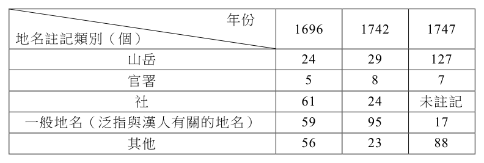
表2 不同時期《臺灣府志》地圖上出現的地名註記類別及數量統計 地名註記類別（個） 1696 1742 1747 山岳 24 29 127 官署 5 8 7 社 61 24 未註記 一般地名（泛指與漢人有關的地名） 59 95 17 其他 56 23 88
（A） 山岳數量增加，顯示歷經多次民變，官府更重視近山治安（B） 官署數量變化不大，顯示清代設官署治理的範圍並未變化（C） 社的數量減少，顯示原住民歸化後，以一般地名取代社名（D） 一般地名數量變化，顯示受渡臺禁令影響，漢人大幅減少答案：（A）
詳解與考點 正解：依表 2 讀得，山岳註記由 1696 年的 24 增至 1747 年的 127；題幹又提示地圖服務於統治、用兵與管理，因此山岳註記大幅增加，最能連結官府歷經多次民變後對近山治安與防務的重視，故 A 正確。
B：官署註記數量變動不大，只能說表上的官署標示大致穩定，不能直接推論設官治理的範圍完全未變，B 錯誤。
C：「社」的註記減少可能有測繪、分類或標示方式等因素，單靠數量不能證明原住民歸化後以一般地名取代社名，C 錯誤。
D：一般地名數量的變化不能直接證明漢人大幅減少，且渡臺禁令的影響也不能由此單一統計推出，D 錯誤。它看起來對，是把地名註記的增減直接等同於人口的增減，忽略地圖本身的繪製目的與分類方式。
本題考點：歷史地圖判讀——先比較表中跨期註記的明顯變化，再連結題幹交代的統治、兵防目的；史料推論判準——地圖標示數量可支持關注重點的推論，不能單獨證成人口或治理範圍的確切變動。
第 9 題
日治時期，某篇小說寫到，主人翁在內地時，被問到來自何處，總是謊稱來自四國或九州，也只敢以日本姓名與朋友交往，深怕被人認出真實的出身。主人翁表示，在內地時，他對於內地人、本島人、半島人、還是中國人，看一眼總能辨認出來。主人翁的時代背景和身分最可能是：
（A） 1900年代前往日本工作的朝鮮學者（B） 1930年代在滿洲國任教的日本教師（C） 1940年代前往日本求學的臺灣學生（D） 1950年代回歸日本的前殖民地官員答案：（C）
詳解與考點 正解：題幹以「內地」「本島人」「半島人」及隱瞞臺灣出身、使用日本姓名為線索，指向日治後期皇民化脈絡；C 的 1940 年代前往日本求學的臺灣學生最符合，故 C 為正解。
A：朝鮮學者身處日本時不會以「本島人」指認自身族群背景；題幹的敘述者是將本島人、半島人與中國人並列辨認者，較符合臺灣人視角。
B：滿洲國任教的日本教師不會在日本內地假稱來自四國或九州，也不符合敘述者對自身出身的隱匿。
D：1950 年代日本已失去殖民地，題幹的「內地／本島／半島」分類與日治時期語境不合。
本題考點：日治時期身分辨識——「內地」指日本本土，「本島人」指臺灣人，「半島人」指朝鮮人；歷史情境判讀——以殖民用語與皇民化下的改名、隱匿出身線索定位年代與身分。
第 10 題
第二次世界大戰期間，一位政治領袖針對當時嚴峻局勢演講時，表示：自己的國家會與法蘭西共和國緊密攜手、互相援助，無論法國發生什麼事情，本國都將繼續戰鬥，誓死保衛國土，絕不放棄也永不投降。雖然他堅信自己的國家自己救，但是也深信「新世界」會竭盡全力來拯救。上述的「演講者」與「新世界」分別是指：
（A） 演講者是希特勒；「新世界」是指德國，會重新塑造舊歐洲（B） 演講者是邱吉爾；「新世界」是指美國，會派兵與英國合作（C） 演講者是史達林；「新世界」是指英國，會從西方夾擊德國（D） 演講者是羅斯福；「新世界」是指蘇聯，會走共產主義路線答案：（B）
詳解與考點 正解：題幹「與法蘭西共和國緊密攜手」、「絕不投降」及寄望「新世界」拯救，對應法國淪陷後英國首相邱吉爾的戰時演說。B：演講者是邱吉爾；新世界指美國，後來美國參戰並與英國合作。
A：希特勒不會以援助法國、盼外力相救的立場演講。
C：史達林所稱的新世界不會是英國，且語境不合。
D：羅斯福不會把蘇聯稱為新世界並以此表述英國保衛本土。
本題考點：二戰史料辨識——把演說中的盟友、戰況與用語連回歷史人物；判準——英國對法國的承諾與「新世界」的援助，指向邱吉爾與美國。
第 11 題
元代〈重建海道都漕運萬戶府碑〉提及：海漕（以海運運漕糧），古未有也。漢仰漕山東，唐仰漕江淮，皆無路途遙遠之阻。今京師與江南相去數千里，而政府所需皆仰賴南方，欲朝夕供給，如取諸左右，若無良法則民勞國弊。根據上述，元代增闢海運的最可能原因為何？
（A） 建立迅速取得大量物資的方式（B） 將京師的農產物資調往各地區（C） 原有的運河因淤積而無法運輸（D） 避免北方漢人抗元勢力的干擾答案：（A）
詳解與考點 正解：碑文的「京師與江南相去數千里」、「政府所需皆仰賴南方」與「朝夕供給」說明核心問題是長距離、穩定而大量的物資供應。A：增闢海運可建立迅速取得大量漕糧與物資的方式，正合碑文，故 A 為正解。
B：碑文說明的是江南物資運往京師，即南輸北，不是把京師農產物資調往各地，B 錯誤。
C：碑文未提及運河淤積；且元代仍使用大運河，C 錯誤。
D：碑文著重路程與供給效率，未以避免北方漢人抗元勢力為理由，D 錯誤。
本題考點：史料判讀——先擷取史料中明示的空間、物資與目的線索；漕運題見「南方供給京師」時，判斷物資流向為南輸北，不能以題外的政治推測取代史料證據。
第 12 題
考古出土的墓室壁畫是重要的歷史研究材料。圖1是埃及考古挖掘出的墓室壁畫，其中甲圖描繪僕人正在處理禽肉；乙圖描繪僕人正在調製醬汁及製作麵包。上述壁畫內容可作為研究哪項歷史課題的資料？甲乙圖1
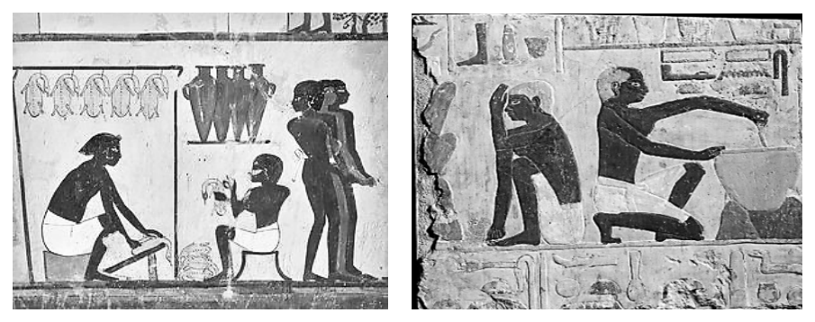
（A） 古代社會階層分化與物質生活（B） 宗教祭司與信徒間的互動關係（C） 宗教輪迴轉世觀與社會倫理觀（D） 傳統王權統治與神權思想結合答案：（A）
詳解與考點 正解：壁畫描繪僕人處理禽肉、調製醬汁與製作麵包，能直接觀察勞動分工、主僕關係與飲食生活。A：畫面呈現埃及的社會階層分化及物質生活，故 A 為正解。
B：畫面沒有祭司與信徒的互動，不能據此推論宗教關係。
C：畫面未呈現輪迴轉世或社會倫理觀，C 錯誤。
D：畫面沒有王權或神權思想結合的情節，D 錯誤。
本題考點：史料判讀——圖像可作為研究勞動、飲食與社會關係的材料；證據判準——推論必須有畫面直接支持，不能由墓室壁畫身分過度延伸至未呈現的宗教或政治觀念。
第 13 題
十六世紀末日本出兵朝鮮，將一些朝鮮官員俘至日本。稍後，其中一位官員逃至中國。明朝官方聽聞此事，特別頒發詔書表彰其忠節，並派人送他回國。這位官員不僅未被懷疑通倭，甚至倍感榮耀。他的經歷，最能用來說明當時朝鮮對明朝的何種認知？
（A） 明朝是軍事盟國，有協助朝鮮戰俘返國並獎勵忠貞的責任（B） 明朝是理學開創期，朝鮮人深受影響而有強烈的忠節觀念（C） 明朝是東亞強權，朝鮮必須服從明朝意旨才能獲得其援助（D） 明朝是宗主國，朝鮮人獲其表揚不需擔憂被追究戰俘身分答案：（D）
詳解與考點 正解：朝鮮官員逃至明朝後獲詔書表彰、護送返國，且不被懷疑通倭；這顯示朝鮮把明朝視為可授予正統認可的上位國。D：明朝是宗主國，朝鮮人受其表揚不必擔憂被追究戰俘身分，最符合朝貢體系認知，故 D 為正解。
A：軍事盟國是平等國家間的合作定位，不能說明明朝頒詔表彰朝鮮官員的上下位關係。
B：理學開創期與題幹的明、朝鮮宗藩關係無關，且時序不符。
C：選項將關係扭曲為脅迫服從，題幹重點是宗主國對藩屬官員忠節的認可與庇護。
本題考點：明代東亞朝貢體系——宗主國與藩屬國並非現代國家間的平等盟約；辨識線索——宗主國頒詔表揚、護送藩屬官員返國，反映其政治與禮制上的上位地位。
第 14 題
十六世紀末期，駐菲律賓的西班牙總督向國王報告，在菲律賓和華人貿易有害而無益，因為華人運來了大量棉布、粗糙廉價的絹疋，還有生絲或紡絲等在此貿易。而最令人憂慮的是它們還超過從西班牙運來的輸入量，這將會導致格拉那達、瓦倫西亞等地繳納給王室的稅收減少。依據題文，總督最擔憂的是：
（A） 菲律賓當地紡織品產量降低，人民將缺乏布料（B） 華人已逐步取得西班牙貿易代理權並壟斷貿易（C） 若是進口中國大量廉價貨物，本土產業將毀滅（D） 西班牙出口至菲律賓的紡織品數量將日益減少答案：（D）
詳解與考點 正解：題幹直接指出華人貨物「超過從西班牙運來的輸入量」，並使格拉那達、瓦倫西亞繳給王室的稅收減少；應抓住總督所說的直接貿易後果。D：西班牙出口至菲律賓的紡織品數量將日益減少，正是總督最擔憂的結果，故 D 正確。
A：題文沒有說菲律賓當地紡織品減產或人民缺乏布料，A 錯誤。
B：題文未提華人取得西班牙貿易代理權或壟斷貿易，B 錯誤。
C：大量進口中國廉價貨物可能使人聯想到本土產業受衝擊，但題幹直接點出的是西班牙貨輸菲減少與稅收下降，不能將間接後果當作最直接的擔憂，C 錯誤。它看起來對，是因為廉價進口品確可能衝擊本土產業，但題目問的是總督在文中明言的核心憂慮。
本題考點：近代貿易史料判讀——先找史料中明示的因果鏈，再判斷行為者最直接的利益損失；主旨判準——華人貨物超過西班牙輸入量，直接導向西班牙出口減少與王室稅收降低。
第 15 題
一位十九世紀末的古巴作家，提及自己身處的拉丁美洲是：身穿美國短褲和外衣，也穿著巴黎的背心，頭戴著西班牙禮帽。他藉由描繪這種怪異裝扮，實際上批評的是：
（A） 基督信仰價值觀取代傳統觀念（B） 美國門羅主義讓政治運作受阻（C） 歐美殖民對於當地文化的威脅（D） 主張成立民族國家的革命運動答案：（C）
詳解與考點 正解：題文以美國、巴黎與西班牙服飾混搭的怪異裝扮比喻拉丁美洲文化受外來力量拼貼與遮蔽，焦點在文化認同。C：作者批評歐美殖民對當地文化的威脅，故 C 為正解。
A：題文未提及基督信仰或其取代傳統觀念，錯誤。
B：門羅主義屬政治範疇，題文藉服飾意象聚焦文化問題，錯誤。
D：題文批評外來文化影響，並非主張成立民族國家的革命運動，錯誤。
本題考點：歷史文本意象解讀——從混搭服飾辨識外來文化滲透；主旨判準——題文著重文化威脅時，不轉答為宗教、政治運作或革命運動。
第 16 題
圖 2 為某生在探究臺灣帶有「崙」字地名時所繪製的地圖。根據此圖，最可能得到下列哪項推論？
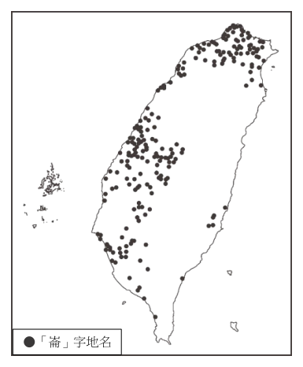
（A） 臺灣的崙字地名多分布在客家語優勢區（B） 臺北與基隆的崙字地名多源於沙丘之意（C） 南投崙字地名多隱含凸起小丘地形特徵（D） 臺南沿海因多沙丘故崙字地名冠於全臺答案：（C）
詳解與考點 正解：題幹要從地名分布圖推論，須把「崙」的地形語意與各地分布相互對照，而非把分布過度延伸為單一語區或全臺排名。C：崙可指凸起小丘，南投多丘陵，該地的崙字地名最可推論隱含此地形特徵，故 C 為正解。
A：圖中崙字地名並非只集中於客家語優勢區，不能由分布直接推出此結論。
B：臺北與基隆的崙字地名不必然源於沙丘，且圖無法支持此一特定地形成因。
D：臺南沿海雖可能有沙丘地形，但圖中崙字地名並非臺南冠於全臺，D 錯誤。
本題考點：地圖判讀——由空間分布提出推論時，須同時符合地名語意與地形條件；避免過度推論——分布圖未顯示單一語區、特定成因或全臺最多時，不可自行補入結論。
第 17 題
澳大利亞食蜜鳥，是一種以花蜜為主食的鳥類，多棲息在常綠闊葉林中，牠們在吸取花蜜的同時，也成了花粉的散播者，因此能促進植物授粉與繁殖。但近年來，上述鳥類的棲息地逐漸受到破壞，導致生物群落減少，此情形最容易造成下列哪項影響？
（A） 西部海岸生態系脆弱度增加（B） 大堡礁沿岸易遭外來種入侵（C） 中部盆地的生物多樣性降低（D） 大分水嶺難以維持環境永續答案：（D）
詳解與考點 正解：食蜜鳥棲息於常綠闊葉林，吸蜜時協助植物授粉；關鍵是棲地破壞會使授粉功能下降，並影響該棲地所在區域的生態永續。D：常綠闊葉林主要分布於大分水嶺東側，食蜜鳥減少將降低植物授粉與繁殖，進而使大分水嶺較難維持環境永續，故 D 為正解。
A：西部海岸以地中海型或乾燥氣候為主，非食蜜鳥主要棲息的常綠闊葉林分布區，A 錯誤。
B：大堡礁沿岸為海洋生態系，與食蜜鳥的陸地常綠闊葉林棲地沒有直接關聯，B 錯誤。
C：中部盆地屬乾燥地區，非食蜜鳥主要棲地；它看起來對，是因為棲地破壞確會造成生物多樣性降低，但必須先對應物種實際分布地，C 錯誤。
本題考點：生態系服務與澳大利亞區域地理——授粉者減少會降低植物繁殖並削弱生態系功能；由物種棲地推論影響時，先以常綠闊葉林對應大分水嶺東側，再判斷後果。
第 18 題
某生利用高速公路電子收費系統在通勤時段的流量資料，探究臺灣地區民眾的活動範圍。他將汽車進入與離開高速公路的起迄資料繪製於地圖上，並根據資料在空間上的密集程度，定義數個生活圈。圖 3 是起迄資料與生活圈的呈現結果。下列何者最適合成為該探究活動的標題？
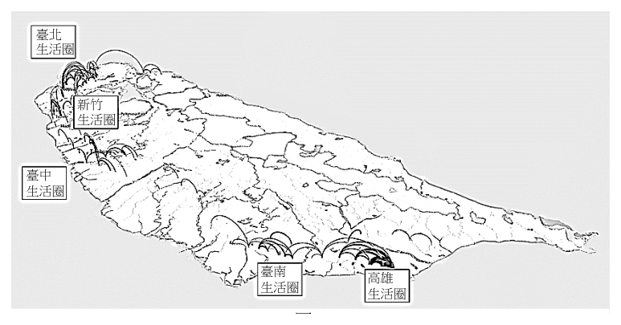
（A） 資訊革命如何改變生活模式（B） 運輸活動如何影響聚落系統（C） 路網型態如何加速人口遷移（D） 交通革新如何造就都市機能答案：（B）
詳解與考點 正解：題幹以高速公路 ETC 的起迄流量資料，依空間密集程度界定生活圈，核心是運輸活動與聚落勢力範圍的關係。B：運輸活動的流量與連結可呈現生活圈及聚落系統，最適合作為探究標題，故 B 為正解。
A：資料雖屬數位資料，研究重點不是資訊革命如何改變生活模式，錯誤。
C：圖示分析的是通勤起迄與生活圈，不是人口遷移或路網加速移居，錯誤。
D：題幹沒有探討交通革新如何造就都市機能，而是以既有運輸流量辨識生活圈，錯誤。
本題考點：地理探究題——先辨認資料的變項與分析結果，再選涵蓋兩者的標題；起迄流量的空間密集可用來界定生活圈與聚落系統。
第 19 題
圖 4 為南亞某河川因大規模土石滑落阻擋河道而形成的堰塞湖。湖水目前已自天然壩體上方溢流，但壩體整體結構仍屬穩定，暫無潰決之虞。圖中顯示的堰塞湖溢流方向，最可能指向下列哪個方位角？ N 圖4
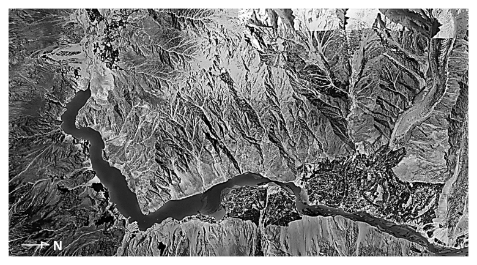
（A） 0°（B） 90°（C） 180°（D） 270°答案：（D）
詳解與考點 正解：題幹要求由圖中的指北符號與堰塞湖溢流方向判讀方位角，方位角以北方為 0°，順時針量至西方為 270°。D：湖水自天然壩體向河谷下游漫溢，依圖中 N 校正方位後可判為朝西，故方位角為 270°，對應 D。
A：0° 表示正北，與圖示的溢流朝西不符，A 錯誤。
B：90° 表示正東，與圖示的溢流朝西不符，B 錯誤。
C：180° 表示正南，與圖示的溢流朝西不符，C 錯誤。
本題考點：方位角判讀——以正北為 0°，順時針依序為東 90°、南 180°、西 270°；衛星影像判準——先用指北符號校正方向，再依河谷下游與溢流箭頭判斷水流方向。
第 20 題
某生玩一款手機遊戲，其中一個關卡需要先利用射程 200 公尺的狙擊槍來癱瘓某座碉堡頂端的探照燈，而且若走入該碉堡半徑 40 公尺的範圍內，則會被碉堡內的士兵發現並遭到反擊。圖 5 是該關卡的地圖，每個網格為 10 公尺的正方形，網格內的數值代表高度，黑色網格為碉堡所在位置，灰色網格為射擊地點候選位置。若要成功過關，該生選擇下列哪個網格作為射擊地點最為理想？
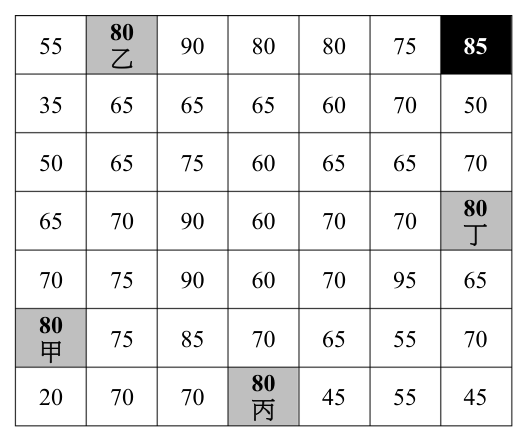
（A） 甲（B） 乙（C） 丙（D） 丁答案：（C）
詳解與考點 正解：題幹要求同時滿足安全距離、狙擊槍射程與通視條件；應先排除半徑 40 公尺內的位置，再檢查地形是否遮蔽。C：丙距碉堡約 67 公尺，在 40 公尺反擊圈外且在 200 公尺射程內；射向碉堡途中各格高度為 70、70、70、65、70，均低於丙所在的 80，視線通透，故最理想。
A：甲距碉堡約 78 公尺，雖安全且在射程內，但射線途中被高度 90 的網格遮蔽。
B：乙距碉堡約 50 公尺，雖在反擊圈外且在射程內，但同列射向碉堡時被高度 90 的網格遮蔽。它看起來對，是因為距離碉堡較近，卻忽略探照燈必須有通視。
D：丁在碉堡正下方第 3 格，距離僅 30 公尺，落入半徑 40 公尺的反擊圈。
本題考點：網格距離判讀——每格 10 公尺，先換算是否落在安全半徑與射程內；地形通視判準——射線途中若有較高地形，即無法瞄準目標。
第 21 題
2021 年歐盟提出全球門戶計畫，投資相關國家的數位、氣候、能源、交通等基礎建設，以拓展歐盟對外的政治經濟影響力。2023 年歐盟宣布先投資中亞的交通建設，建立歐洲經裏海至中亞的貿易替代路線。該路線完成後，將有助於藥品、汽車、機械與紡織品等商品貿易往來。其中哪項商品最可能大量地透過該貿易路線由東往西運送？
（A） 藥品（B） 汽車（C） 機械（D） 紡織品答案：（D）
詳解與考點 正解：題幹的路線由歐洲經裏海通往中亞，問商品「由東往西」運送，關鍵是辨別中亞對歐洲的出口優勢。D 的紡織品屬中亞如烏茲別克等國的重要出口品，且為勞力密集型產業，最可能由東往西運往歐洲，故 D 為正解。
A：藥品多為歐洲的高端出口品，較合理的流向是由西往東，A 錯誤。
B、C：汽車與機械亦是歐洲的出口優勢，較可能由西往東運送，B、C 錯誤。它們看起來對，是因為題幹把藥品、汽車、機械與紡織品都列為可貿易商品；但列舉不代表各商品的流向相同。
本題考點：區域貿易流向——先由起訖地判別東西向，再以產業比較利益推估出口品；中亞產業結構——勞力密集的紡織品較可能由中亞輸往歐洲，歐洲的藥品、汽車與機械則較可能反向輸出。
第 22 題
2024 年在聯合國森林論壇中，有代表指出「農業是全球森林砍伐的重要驅動因素，應列入會議文件」，但某國代表則要求將「農業」移除在外。主因是該國為求經濟發展，長期砍伐森林，開闢肉牛放牧場和飼料農地。當地土壤層雖深厚，但實為貧瘠，因暴雨頻繁，在無森林保護下，養分流失更快。上述的農業景觀最可能是照片 1 中的何者？
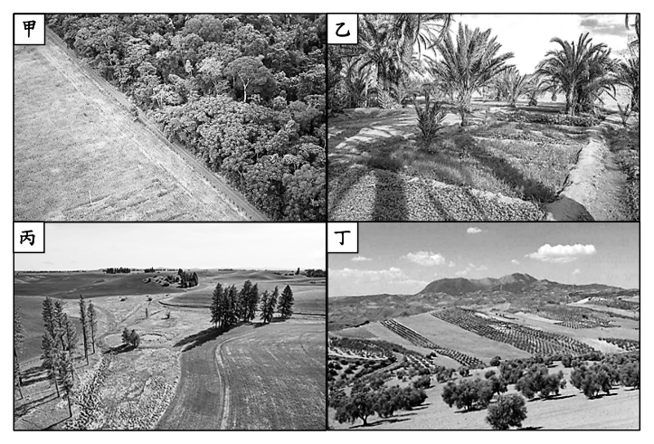
（A） 甲（B） 乙（C） 丙（D） 丁答案：（A）
詳解與考點 正解：題幹描述為開闢肉牛放牧場與飼料農地而砍伐森林，並指出暴雨下土壤養分迅速流失；關鍵是辨認森林清除後的農牧業景觀。官方答案為 A，對應照片甲；但本筆輸入未附照片1，無法由現有資料核對甲的實際景觀。
B：B 對應照片乙；照片缺漏，不能判定其作物、排列方式或土地利用。
C：C 對應照片丙；照片缺漏，不能判定其氣候帶或農業經營型態。
D：D 對應照片丁；照片缺漏，不能判定其是否具有森林清除後的農牧地景線索。
本題考點：農業景觀判讀——須把經濟活動與自然條件一起核對；砍伐森林開闢牧場或飼料農地後，失去植被保護的土壤在頻繁暴雨下易因淋溶而流失養分。
第 23 題
臺灣有咖啡店家自某國進口咖啡豆，烘焙出獨特風味咖啡。已知該國咖啡豆主要分為兩類，一類分布在維多利亞湖附近，果實碩大、口味甘甜，另一類則分布在全國其餘各地，並以吉力馬札羅山腳地區所生產帶有柑橘、莓果味的阿拉比卡豆為最有名。圖 6 是四個測站的氣溫雨量圖，哪個測站最可能位於該國出名的阿拉比卡咖啡產區？
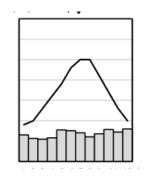
（A） 甲（B） 乙（C） 丙（D） 丁答案：（A）
詳解與考點 正解：題幹的「吉力馬札羅山腳」指赤道附近高地，應找終年溫和、年溫差小且雨量適中呈雙峰雨季的氣候圖。A：甲圖溫度線高而平穩，均溫約 20℃，雨量中等並呈雙峰，最符合吉力馬札羅山腳的高地熱帶氣候，故 A 為正解。
B：乙若呈大年溫差，便不合赤道高地終年溫和的特徵。
C：丙若呈單峰夏雨，與赤道附近常見的雙峰雨季不符。
D：丁的溫度或雨量年分配不具高地熱帶的溫和、雙峰特徵。
本題考點：氣溫雨量圖判讀——先由緯度與地形推估年溫差，再以雨量月分配辨識雨季型態；赤道高地常見年溫差小、氣溫較低且雙峰雨季，須同時符合才可定位。
第 24 題
某研究陳述：「十七世紀中葉以前，印度洋的海上航線分為兩條。一條是近海航路，沿著東南亞、南亞、西亞的海岸線行進，這是絲綢、瓷器與乳香、丁香等香料產品的貿易路徑。另一條是橫跨印度洋，自蘇門答臘或馬來半島出發，徑直向西，經斯里蘭卡、馬爾地夫，直達阿拉伯半島，這是香料輸送的快捷路線。兩條航線均隨季節更迭而來回。」此研究最可能發展出下列哪項有關海上貿易航線劃設的假設？
（A） 資源生產國主導區域交互作用的強度與頻率（B） 市場規模與人口密度決定了港口貿易的榮枯（C） 西風風勢的強弱影響了大洋航運路線的選擇（D） 風向與洋流影響了貨物運輸路線與時間節奏答案：（D）
詳解與考點 正解：題文兩條印度洋航線都「隨季節更迭而來回」，關鍵在航行路線與往返時間受季節性自然條件支配；印度洋的季風與洋流正能解釋此現象。D 的「風向與洋流影響貨物運輸路線與時間節奏」最能發展為題文所支持的假設，故 D 為正解。
A：題文列出絲綢、瓷器與香料等貨物，沒有比較資源生產國是否主導區域交互作用的強度或頻率，A 錯誤。
B：題文未提供市場規模、人口密度或港口榮枯的資料，B 錯誤。
C：西風帶主要位於中高緯度；題文的東南亞、南亞、西亞印度洋航線所指的季節性往返，應以季風及其洋流解釋，不是西風，C 錯誤。它看起來對，是因為風勢確會影響航行，但必須對應題文所處海域與「隨季節更迭」的季風特徵。
本題考點：印度洋海上貿易——近海與橫跨印度洋航線皆受季風影響；歷史假設判讀——從題文反覆出現的「隨季節更迭」抽出可驗證的自然條件，再排除題文未提供的經濟或政治因素。
第 25 題
某個以推廣環境友善農產品為宗旨的企業，透過網站和社群連結農民與消費者。農民透過平台分享種植理念與田間故事，讓消費者了解農產品的環境友善生產過程；消費者則能透過網路下單，以公平的價格購買到新鮮食材，並追蹤產品來源。要達到上述「連結農民與消費者」此經營模式的前提，與下列哪項產業發展的先決條件最為類似？
（A） 電腦螢幕在自動化生產下的專業分工（B） 會計事務所財務管理的跨國外包服務（C） 玫瑰花卉適地適種的區域專業化經營（D） 家具店店家空間集中的聚集經濟效應答案：（B）
詳解與考點 正解：題幹的經營模式以網站與社群跨距離連結農民、消費者，前提是資訊與服務可透過網路傳遞，不必在同一地點實體接觸。B 的會計事務所跨國外包服務具相同前提，故 B 為正解。
A：自動化生產下的專業分工是製造流程的分工條件，不是跨地連結供需雙方的前提，A 錯誤。
C：花卉適地適種強調自然環境與生產地的配合，C 錯誤。
D：聚集經濟仰賴店家空間集中，與平台分散連結生產者與消費者的模式相反，D 錯誤。
本題考點：數位經濟——平台的核心條件是資訊可跨越地理限制流通；產業區位比較——跨國外包屬遠距服務，適地適種與聚集經濟則分別依賴自然區位與空間集中。
在某大城市，紅線違規停車經常造成交通堵塞和延誤，影響行人和其他駕駛人的正常通行，並增加交通事故的風險。現行法規的罰鍰金額忽略紅線違停對交通系統的潛在影響，因此市政府考慮將交通影響納入評估並修法調整罰鍰金額。請問：
第 26 題
如以外部成本或價格管制概念來描述該市政府政策時，下列哪項推論最可能成立？
（A） 調高罰鍰，最直接的效果為減少違規總次數而降低交通堵塞與事故（B） 調高罰鍰，最直接的效果為減少每一次違規停車所產生的外部成本（C） 執行價格上限政策，解決紅線違規停車問題並減少產生的外部成本（D） 執行價格下限政策，降低違規停車對交通系統與流量潛在不利影響答案：（A）
詳解與考點 正解：題幹指出紅線違停造成堵塞與事故風險，市政府擬把未被違規者負擔的交通損失納入罰鍰，關鍵是以較高違規代價促使行為人內化外部成本。A：調高罰鍰最直接會降低違規意願與違規總次數，進而減少交通堵塞與事故，故 A 為正解。
B：罰鍰改變的是違規者的誘因，不會直接降低每一次違停原本造成的堵塞或事故風險，B 錯誤。
C：紅線禁停是對行為的禁止與管制，不是設定交易價格上限，C 錯誤。
D：價格下限用於維持最低交易價格，和以罰鍰矯正違停外部成本無關，D 錯誤。它看起來對，是因為罰鍰涉及金額，卻不能因此把所有金額調整都當成價格管制。
本題考點：外部成本——行為使他人承擔堵塞、事故等成本時，可提高私人違規成本以促進內化；政策效果判讀——罰鍰直接改變違規誘因與次數，不直接改變單次違規的外部損害；價格管制——價格上限、下限須是對市場交易價格的規範。
第 27 題
依據題文，從法治國原則的觀點判斷，下列對於市政府修法的評論意見何者最適當？
（A） 不宜提高罰鍰太多，以免違反法律的信賴保護原則（B） 考慮到事故風險，罰鍰是最能有效遏止違停的手段（C） 須參酌罰鍰與保障法益的衡量，適當調整罰鍰金額（D） 不應讓每案的罰鍰金額存在差異，以落實平等原則答案：（C）
詳解與考點 正解：題幹要以法治國原則評論調整違停罰鍰，關鍵是行政處罰須在違規侵害的法益與手段強度間保持合比例。C：修法時應參酌罰鍰與保障交通安全、通行等法益的衡量，適當調整金額，符合比例原則，故 C 為正解。
A：信賴保護主要處理人民對既有行政措施或法律關係的合理信賴；調高罰鍰本身不必然違反，A 錯誤。
B：罰鍰是否「最能有效」是政策效果的比較，未直接說明法治國原則的合法、必要與衡量要求，B 錯誤。
D：平等原則是相同情形相同處理、不同情形得依合理差異處理；各案可依違規情節有不同罰鍰，D 錯誤。它看起來對，是因為平等不等於所有案件一律相同金額。
本題考點：比例原則——處罰手段須與所追求的公共利益及侵害程度相稱；平等原則——相同情形相同對待，存在合理差異時得不同處理；信賴保護——不可泛化為法律不得調整。
2024 年，台積電在日本熊本縣投資的晶圓代工廠正式啟用。媒體分析指出，台積電在此設廠主要有兩大考量：一是當地水資源充沛；二是阿蘇火山山腳處，具備發展地熱、太陽能、水力發電等再生能源的優勢，有助於台積電在 2050 年前實現 100％再生能源倡議。此外，日本相關企業也陸續加快投資腳步，例如富士軟片在當地設立新廠，專門生產半導體前段製程所需的研磨劑；電鍍化學品大廠亦計畫在當地設廠，提供半導體製造所需的電鍍藥水。請問：
第 28 題
依據題文，台積電宣布於熊本設廠的考量，其中的第二個考量因素主要是基於哪項工業區位要素？
（A） 原料（B） 市場（C） 動力（D） 資金答案：（C）
詳解與考點 正解：題幹明確指定第二個考量是阿蘇火山山腳可發展地熱、太陽能與水力發電等再生能源，這些都是工廠運作所需的能源供應，屬於動力區位要素。C 符合題文，故 C 為正解。
A：原料是投入生產的半導體原物料；題文提到的是地熱、太陽能與水力等能源，不是原料，A 錯誤。
B：市場指產品銷售地；市場雖可能是設廠考量，但題目指定的第二項因素是再生能源優勢，B 錯誤。它看起來對，是因為企業設廠通常也會衡量市場，但作答必須對準題文列出的第二項因素。
D：資金指融資或資本取得條件，題文未提及資金來源或融資，D 錯誤。
本題考點：工業區位要素——生產所需的電力、燃料與再生能源，歸入動力要素；題文定位判準——先鎖定題幹指定的考量句，再依其描述的資源功能分類，避免以其他可能因素代替。
第 29 題
依據題文，相關日本廠商也加快投資，這些廠商製造的產品與台積電之間的流通關係，最符合下列哪個概念？
（A） 產業群聚（B） 互補產品（C） 工業慣性（D） 產業連鎖答案：（D）
詳解與考點 正解：題文的關鍵是研磨劑與電鍍藥水都供給台積電的半導體製程，表示不同廠商位在同一供應鏈的上下游，應以「產業連鎖」判斷。D 的產業連鎖指上游原料或零組件供應者與下游製造者間的垂直流通關係，最符合富士軟片與電鍍化學品廠供應台積電的情境，故 D 為正解。
A：產業群聚強調相關產業在同一地區的地理集中；題文雖提到熊本設廠，判斷重點卻是廠商供應製程材料的上下游關係，A 錯誤。它看起來對，是因為多家半導體相關廠商集中投資同一地區，但地理集中不是本題所問的流通關係。
B：互補產品是消費端常搭配使用的產品，例如印表機與墨水；研磨劑、電鍍藥水則是台積電生產時的上游投入，B 錯誤。
C：工業慣性指產業傾向繼續留在原址的現象，與日本廠商因半導體供應需求加快投資不符，C 錯誤。
本題考點：產業連鎖——上游供應原料、材料或零組件給下游製造者，即屬垂直供應鏈關係；產業群聚辨析——地理集中講區位，產業連鎖講上下游流通，須依題目問的關係判斷。
在花東一帶，有些土地原本是臺灣原住民族祖先生活的傳統領域，但在日治時期，傳統領域被政府當成是無主土地。政府除趕走原來的原住民使用者，又將其劃為糖業種植經濟區域，給予日資會社發展糖業。戰後政權轉移，政府將相關土地所有權劃歸公營的台糖公司所擁有，這使得日後在該地上耕作的原住民，雖可能是原始土地使用者，反而每年要向台糖納租，成為佃農。晚近為解決此一問題，原住民族委員會遂以行政命令，以價購方式向台糖買回符合前述情形的土地。再依照現有法律程序將該項土地註記為原住民保留地，且將所有權分配給相關原住民擁有。而原住民擁有之保留地，除有特別的規定之外，原則上不得轉讓或出租給不具原住民族身分者。請問：
第 30 題
依據題文，日治時期能在臺灣東部取得大量土地以設置糖廠，係基於臺灣總督府哪項政策的影響？
（A） 土地及林野調查忽視原住民地權，以擴大官有土地面積（B） 官方推進隘勇線來限縮原住民族領域，終使其放棄土地（C） 在官有地設置官營移民村，由日本移民取得當地的地權（D） 官方淘汰舊式糖廍，改由大型製糖會社來接手經營農地答案：（A）
詳解與考點 正解：題文指出日治政府將原住民族傳統領域視為「無主土地」，再劃為糖業經濟區交予日資會社；關鍵是土地調查如何處理原住民地權。A：土地及林野調查忽視原住民地權，將傳統領域劃為官有地，因而擴大可供糖業會社取得的土地，故 A 為正解。
B：隘勇線是限縮與控制原住民族活動範圍的軍事措施，並非將土地登記為官有地、供糖廠設置的直接政策。
C：官營移民村旨在引進日本農民移墾，不能解釋日資糖業會社大量取得土地。
D：淘汰舊式糖廍、由大型會社經營屬製糖產業政策；它看起來對，是因為同樣涉及糖業，但未回答土地所有權從何而來。
本題考點：日治土地政策——土地及林野調查將原住民族傳統領域視為無主地並納入官有地；史料因果判讀——題幹問大量土地的取得依據時，須區分土地制度與後續產業經營政策。
第 31 題
題文中的製糖會社，若在「糖業種植經濟區域」種植甘蔗時，最容易遭遇到下列哪項災損，導致生產成本較高？
（A） 熔岩台地農園遭颱風侵襲被摧毀（B） 海階農園受侵蝕作用而逐漸崩落（C） 三角洲農園因過度抽水導致下陷（D） 沖積扇農園因暴雨侵襲而被淹沒答案：（D）
詳解與考點 正解：花東縱谷由山地河川沖積形成沖積扇與沖積平原，颱風豪雨時溪水暴漲，關鍵是沖積扇農園的淹水風險。D：沖積扇農園因暴雨侵襲而被淹沒，最可能增加甘蔗生產成本。
A：熔岩台地主要見於澎湖，不是花東糖業種植區。
B：海階雖可見於花東，但侵蝕崩落不是此農業情境最主要災損。
C：三角洲抽水下陷多見於都市沿海，與花東農園不合。
本題考點：地形與災害——山麓沖積扇鄰近河川，豪雨時易受洪水與土砂影響；區位判準——先確認花東地形，再排除澎湖熔岩台地與西部沿海三角洲情境。
第 32 題
依據題文，政府採取了多個階段的法律措施，以達到讓原住民族取回傳統領域、擁有保留地的目標。這些措施，並不包含下列何者？
（A） 遵循原住民族保留地相關法律依據（B） 允許台糖依契約自由原則出售土地（C） 限制原住民族對於保留地的支配權（D） 承認台糖取得該相關土地的所有權答案：（B）
詳解與考點 正解：題幹問政府為讓原住民族取回傳統領域、擁有保留地所採的措施「不包含」者。題文的作法是政府以行政命令向台糖價購土地，不是允許台糖基於契約自由自行出售；B 不包含在內，故 B 為正解。
A：依原住民族保留地相關法律依據處理土地，是達成保留地目標的法律措施之一，A 錯誤。
C：保留地不得任意轉讓給非原住民，屬對保留地支配權的限制，C 錯誤。
D：台糖已取得該土地所有權是政府進行價購時所承認的法律事實，D 錯誤。它看起來對，是因為土地交易表面上也有買賣，但行政價購的法律性質不同於一般契約自由交易。
本題考點：法律措施判讀——先辨認題文中的公權力手段，再排除性質不同的私人契約行為；原住民族保留地——保留地制度可伴隨取得、註記與移轉限制等安排。
第 33 題
依據題文，關於當前政府處理原住民族土地作法，下列何種詮釋觀點最適當？
（A） 從維護原住民族生存與發展權利觀點，確保其長期生活條件之穩定（B） 從集體權利觀點，主張原住民族土地應由族群共同決定分配與使用（C） 從轉型正義觀點，處理歷史上殖民統治遺留下來的土地不正義問題（D） 從保障多元文化觀點，透過制度補償回應不同群體對土地權利爭議答案：（C）
詳解與考點 正解：題幹的核心是原住民族傳統領域在日治時期被視為無主土地、交由日資會社使用，戰後又使原住民成為台糖佃農；政府再以價購、註記與分配所有權修補這段歷史不正義。C 從轉型正義觀點解釋殖民統治遺留的土地不正義，最適當，故 C 為正解。
A：維護生存與發展權能說明保留地有助於長期生活條件，卻不能充分說明為何處理的是殖民統治造成的特殊歷史不公。
B：題文寫政府依法律程序把所有權分配給相關原住民，並非由族群共同決定分配與使用，和集體權利的主張不合。
D：多元文化保障著重文化承認與差異尊重；本題著重的是回復、補救殖民土地剝奪，焦點在歷史正義而非一般土地權利爭議。
本題考點：轉型正義——辨識國家對威權或殖民遺留不正義的調查、補償與制度修復；原住民族土地——區分個人保留地權利安排、集體權利主張與歷史土地不正義的不同問題。
日治初期，曾在臺北城北廓外設置「三板橋墓園」，作為日人專屬的葬儀堂、公墓、火葬區。日治後期，隨著都市發展，該墓園曾被規劃為 14、15 號公園預定地但無實施。 1949 年後，該墓園首先為自中國大陸湧入之無住屋難民搭建臨時住宅所占，之後又吸納少數外縣市勞工、處境不利群體遷入，形成跨族群與互助的違建社區。時至年，臺北市政府欲推動該地公園建造計畫，欲強拆違建並迫使住戶遷出， 1997 引發抗爭。某支持抗爭的學者指出：基於人性尊嚴考量，應依居民生活脈絡、社會關係和謀生，妥善規劃安置，而不是隨便將居民驅離或置於安養機構，要求市府暫緩拆除，這也是臺灣史上第一次的反迫遷運動。請問：
第 34 題
該墓園在日治後期階段，隨著都市發展而出現新的規畫，其考量最可能與下列何者有關？
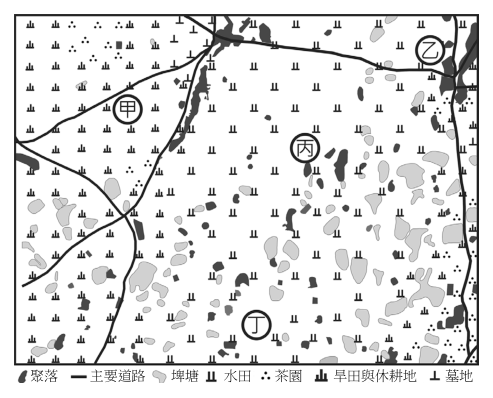
（A） 強調神社文化，強化民眾愛國思想（B） 翻修原有地區，吸引民眾重新移入（C） 因應建地擴張，增加民眾活動空間（D） 增加就業機會，提升民眾經濟收入答案：（C）
詳解與考點 正解：題幹指出日治後期墓園隨都市發展出現新規畫，須從土地使用與規畫目的判斷。C：隨都市發展，三板橋墓園被規畫為公園預定地，目的在增加市民活動空間，符合都市發展的考量，故 C 為正解。
A：神社文化與墓園改規畫為公園預定地無直接關聯。
B：題文沒有翻修原有地區以吸引民眾重新移入的證據。
D：增加就業機會、提升民眾收入不是此類公園規畫的主要考量。
本題考點：日治後期都市發展——都市發展會帶動土地使用重新規畫；史料推論判準——選項須同時符合題幹的時期、都市化背景與規畫目的。
第 35 題
若從憲法保障基本權利的觀點出發，下列敘述何者最可能支持題文中學者的主張？
（A） 受都市計畫影響者有程序參與權利（B） 違章建築住戶得主張享有居住權利（C） 違章建築房屋也受到所有權的保障（D） 強拆迫遷對違建居民構成階級歧視答案：（B）
詳解與考點 正解：題幹學者主張不得隨意驅離居民，應依其生活脈絡、社會關係與謀生狀況妥善安置；關鍵基本權是人性尊嚴下的居住保障。B：違章建築住戶仍得主張居住權利，不應被任意剝奪居住場所，最能支持該主張，故 B 為正解。
A：程序參與權可討論都市計畫決策，但未直接回應學者強調的安置與居住保障。
C：此項把迫遷問題化約為違章建築房屋的所有權保障，未直接回應題文所強調的居民居住條件與妥善安置，故不如 B。
D：題文未以階級歧視作為論證基礎，不能逕行推定。
本題考點：基本權衡量——居住權保障的是人不被任意剝奪基本居住條件，不能直接等同於違章建築的完整所有權；評析迫遷時，先分辨居住保障、程序參與與財產權各自的保護客體。
國共內戰後期，在中國西南地區的一部分國軍撤退至滇緬邊境的山區，建立游擊基地，被稱為「異域孤軍」。1950 年代中期，政府將部分軍人與眷屬撤回臺灣，在北部某地成立眷村安置。當時選擇眷村地點的原則是：農業生產力較差、地價較便宜的邊際土地，與舊住民聚落相隔適當距離。當時部分撤回軍民因無法證明軍籍或軍眷身分，亦無法辦理戶籍而導致成為無國籍人，在就學、就業、居住與社福等方面皆陷入困境。請問：
第 36 題
圖 7 為 1950 年該眷村周邊區域的土地利用圖。該眷村最可能落在圖上的哪個位置？
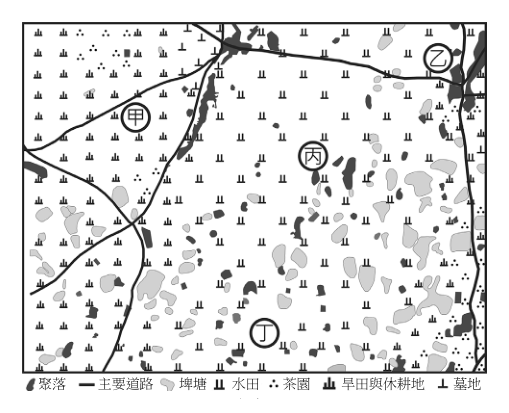
（A） 甲（B） 乙（C） 丙（D） 丁答案：（A）
詳解與考點 正解：題幹明示眷村選址須在農業生產力較差、地價較低的邊際土地，且與舊住民聚落相隔適當距離。A：甲位於旱田與休耕地一帶，鄰近主要道路且與密集聚落符號保持距離，最符合這些條件，故 A 為正解。
B：乙緊鄰聚落或位於較佳農地，不符與舊聚落保持距離及利用邊際土地的原則。
C：丙位於水田、茶園等較具農業價值的土地，不符生產力較差的條件。
D：丁同樣過於接近既有聚落或占用較佳農地，不合選址原則。
本題考點：土地利用圖判讀——先把文字選址條件拆成農地品質、地價與聚落距離，再逐一對照圖例；同時符合邊際土地與交通可及、又不緊鄰舊聚落的位置最合理。
第 37 題
下列哪一個敘述，最能說明早期無法取得軍籍、戶籍者當時在臺灣的處境？
（A） 不包含在我國主權所及的管轄與保護範圍（B） 不被法律承認為可主張權利和承擔義務者（C） 不享有與我國國民平等的法律保障（D） 不屬《世界人權宣言》的保障對象答案：（C）
詳解與考點 正解：題幹指出早期部分人因無法證明軍籍或軍眷身分而無法辦理戶籍，並在就學、就業、居住與社福方面陷入困境，關鍵是無法享有與國民同等的制度保障。C：不享有與我國國民平等的法律保障，最能說明其處境，故 C 為正解。
A：這些人仍在我國領土內，受政府管轄與基本保護，不能說完全不在主權所及範圍，A 錯誤。
B：無國籍不等於不具法律上的權利主體地位，B 錯誤。
D：無國籍者仍屬《世界人權宣言》所關注的人權保障對象，D 錯誤。
本題考點：國籍與人權——國籍、戶籍欠缺會使取得社會權利與平等保障受限；權利主體判斷——不具國籍不等於失去法律人格或普世人權保障。
第 38 題
若要進一步研究「孤軍」在當時的處境，下列哪些是屬於證據價值高的第一手史料？
甲、當代學者所撰寫的《孤軍歷史研究》
乙、孤軍官兵們的口述訪談記錄與回憶錄
丙、有關「異域孤軍」的文學、影視作品
丁、該地國軍撤退、滯留決策的官方檔案
戊、設立「異域孤軍故事館」的相關報導
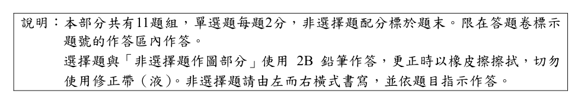
（A） 甲、乙（B） 乙、丁（C） 甲、丙（D） 丁、戊答案：（B）
詳解與考點 正解：題目問證據價值高的第一手史料，判準是資料是否由當事人或在事件當時直接產生。B 所列乙、丁中，乙為孤軍官兵的口述訪談記錄與回憶錄，保留當事人的直接經驗；丁為國軍撤退與滯留決策的當時官方檔案，屬事件形成時的直接紀錄，故 B 為正解。
A：甲是當代學者撰寫的《孤軍歷史研究》，屬後來的研究成果；乙雖為第一手史料，但甲不符合，A 錯誤。
C：甲是二手研究，丙的文學、影視作品則是後設創作，皆非可直接證明當時處境的第一手史料，C 錯誤。
D：丁是第一手官方檔案，但戊是設立「異域孤軍故事館」的相關報導，屬後來報導而非當時直接紀錄，D 錯誤。它看起來對，是因為故事館報導可能整理了史實，但整理史實的報導不等於事件發生當時留下的原始資料。
本題考點：史料層級——當事人口述、回憶錄及事件當時的官方檔案可作第一手史料；證據價值判準——辨別資料產生的時間與位置，後來的學術研究、文藝創作、館舍報導均屬二手或衍生資料。
某學者撰文評論我國一項法案的修法過程，其評論內容摘述如下：「未來任何法案若涉及意見高度分歧，應依據既有立法程序的規範，落實法案審議過程的正當程序。……，另外值得注意的是，此次修法過程也衍生出總統和行政院長權力關係的討論。原因是在我國實際憲政運作下，總統確實掌握行政權，並非內閣制的虛位元首，但我國憲法對行政院的位階又有明確規定，以致中央政府行政權力的實際運作，和憲法規定未必一致。」請問：
第 39 題
以下哪項措施最能呼應該學者對於法案審議過程的主張？
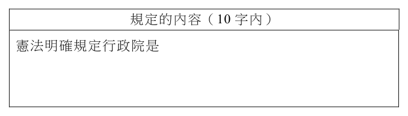
（A） 各法案須先經由專家學者審查，以確保專業審議（B） 政黨黨團先進行黨團協商，並優先採納少數意見（C） 民間團體能透過遊說和請願方式，提出修法草案（D） 遵守議事規則並充分溝通，且審議後刊登於公報答案：（D）
詳解與考點 正解：學者要求意見高度分歧的法案依既有程序規範、落實審議正當程序；關鍵是程序正當與公開可檢驗。D 的遵守議事規則、充分溝通並刊登公報，最能同時實現程序與透明，故選 D。
A：專家審查可增加專業性，但不能取代立法機關本身的正當審議程序。
B：黨團協商可以是程序的一環，但「優先採納少數意見」不是議事正當程序的原則。
C：遊說、請願是民間參與和表意方式，非立法院審議法案的程序本身。
本題考點：立法正當程序——判斷措施時，優先找程序規則、充分討論與公開紀錄三項；外部參與、專業諮詢或政黨協商若未保障正式審議，不能等同程序正當。
第 40 題
依據該學者的意見，我國憲法關於行政院位階的明確規定，其所指為何？請在答題卷作答表格中寫出該項規定的內容。（分） 3 規定的內容（10 字內）憲法明確規定行政院是
本題選項為上圖中的 A／B／C／D，請對照圖片作答。
標準答案未收錄
詳解與考點 考中央政府體制。學者指憲法對行政院位階有明確規定，即《憲法》第53條：行政院為國家最高行政機關，10字內可答「國家最高行政機關」。陷阱：勿與最高立法機關（立法院）、最高司法機關（司法院）混淆；此為總統實掌行政權與憲法規定落差的關鍵條文。
某國勞保基金的收入來源主要為雇主、勞工與政府共同負擔的勞保費，現正面臨破產危機。為彌補基金虧損，該國政府決定不提高勞保費率，選擇採用直接補貼政策，以維持基金穩定運作。同時，亦提出「不鼓勵勞工在未達法定退休年齡（65 歲）時即申請退休」的改革案：將勞保老年退休給付由一次請領，改為按月領取年金，並規定所有勞工，若在 65 歲前申請退休，其領取的年金會被減額 20%。針對改革建議，學者甲注意到目前該國體力勞工申請退休的平均年齡約 55 歲，遠早於非體力勞工的歲。甲分析發現這是因為體力勞工出社會工作較早，且工作性質較具身體 62 危害性，平均餘命也較短。基於此發現，甲主張：新方案若不修正，此看似一視同仁的措施，將造成勞工群體內部不平等。請問：
第 41 題
根據題文，政府決定採取補貼政策，下列何者最可能是決策時考慮的機會成本？
（A） 獲取更多勞工對執政黨的支持（B） 排擠政府其他公共建設的預算（C） 勞工透過集會遊行對政府所表達的不滿（D） 增加廠商營運成本進而削弱企業競爭力答案：（B）
詳解與考點 正解：題幹的決策是政府以直接補貼勞保基金、而不提高費率；關鍵是機會成本指為取得一項選擇所放棄的最佳替代用途。補貼需動用政府預算，因而最可能排擠原可支用於其他公共建設的預算，故 B 為正解。
A：獲取更多勞工對執政黨的支持是可能的政治效益，不是因補貼而放棄的資源用途，A 錯誤。
C：勞工以集會遊行表達不滿是可能出現的反應或社會成本，不是政府預算所放棄的替代用途，C 錯誤。它看起來對，是因為補貼政策確實可能引發不同群體的評價，但機會成本問的是取捨掉什麼，不是政策後果。
D：政府未提高勞保費率，反而避免增加廠商營運成本；此項與題幹決策方向相反，D 錯誤。
本題考點：機會成本——選擇一項資源用途時，被放棄的最佳替代用途即為機會成本；政府預算取捨——新增補貼支出通常會排擠其他公共支出，不能把政治支持或民眾反應直接當作機會成本。
第 42 題
依據題文，下列哪項修正方案最能直接回應甲的擔心及主張？請在左欄勾選方案，並於右欄寫出該方案可達成的具體效果。（3 分，左欄勾選正確，右欄始計分；右欄僅抄錄題文，不計分）
標準答案未收錄
詳解與考點 考點：體力勞工出社會較早、工作損耗大、平均餘命短，甲擔心一視同仁的減額制度對其不公。最能回應的方案：「體力勞工於 55-64 歲間申辦退休時年金不減額」，具體效果為使體力勞工不因提早退休而損失年金，減少群體內部不平等。常見陷阱：誤選依貢獻多寡給付，此未針對退休年齡不公問題；依進入就業年齡決定退休年紀可能接近但效果較間接。【AI 整理需查證】
1950、60 年代，美國歷史學界提出「衝擊－回應」模式，認為中國近代歷史是因為回應西方挑戰而發展。如甲學者強調：列強衝擊推動了中國近代社會的現代化，沒有外力，中國難以自行產生現代化變革。由於越戰失利，美國史家開始重新審視以西方作為衡量歷史發展的標準；70 年代，美國與中華人民共和國關係大幅改變，學術研究變得多元。如乙學者主張：研究中國歷史應重視中國的內在動力，注意中國人如何認識自己的處境，如何理解西方，以及如何根據中國的需求和內在脈絡，反應外來衝擊。請問：
第 43 題
題文中提到 70年代美國與中華人民共和國關係大幅改變，其具體事件最可能是下列何者？
（A） 韓戰結束後中國停止「抗美援朝」（B） 美國的第七艦隊進入臺灣海峽巡弋（C） 越南成為中、美軍事對抗的主戰場（D） 美國總統尼克森親自訪問中國北京答案：（D）
詳解與考點 正解：題幹鎖定 70 年代美國與中華人民共和國關係「大幅改變」，應找出當時直接開啟美中和解的事件。D：1972 年美國總統尼克森親自訪問中國北京，開啟美中和解，最符合題幹所指，故 D 為正解。
A：韓戰結束於 1953 年，中國停止「抗美援朝」屬 50 年代事件，不是 70 年代的美中關係轉折，A 錯誤。
B：美國第七艦隊進入臺灣海峽巡弋始於韓戰期間，並非 70 年代美中關係大幅改變的具體事件，B 錯誤。
C：越南曾成為中、美軍事對抗的主戰場，且越戰失利促使美國反思；但它不是兩國關係大幅改變的事件，後來的尼克森訪中才是轉折，C 錯誤。
本題考點：冷戰時期美中關係——年代題先以時間範圍排除不符事件；關係轉折判準——題幹問外交關係大幅改變時，應選直接促成和解或建交進程的外交事件，而非前因或衝突背景。
第 44 題
依據題文，若以義和團事件為例，下列何者最符合乙學者觀點？請在答題卷勾選一個正確選項，並說明甲、乙兩位學者觀點的主要差異為何？（分） 4
標準答案未收錄
詳解與考點 考點：甲學者（衝擊—回應模式）強調西方外力推動中國現代化；乙學者強調中國內在動力與自身脈絡。以義和團為例，最符合乙觀點者為「義和團事件源於華北農村秩序崩潰，在天災、饑荒和政府徵糧後爆發」，強調內在社會因素而非西方衝擊。主要差異：甲以西方外力為歷史主動因，乙重視中國內部脈絡與自身回應。常見陷阱：誤選「西方壓力升級下的極端反抗」，此仍以外力為主因，偏向甲的視角。【AI 整理需查證】
阿富汗地處西亞，這裡是歷史上東西方貿易的重要通道，也曾是佛教傳布的樞紐。以中部巴米揚為例，山谷內有許多早期佛教苦行僧挖鑿居住的石窟、繪製的壁畫，以及在西元六、七世紀直接以岩石開鑿的兩尊巨大立佛像，俗稱「巴米揚大佛」（照片2），都說明了這裡曾是佛教信仰中心。學者分析巴米揚立佛像，認為在衣紋與雙腳姿勢上，受到希臘化藝術風格影響，這是因為此區位於古代絲路，就像中國敦煌早期的泥塑彩繪佛像，五官與衣紋也呈現希臘化雕像的元素。阿富汗在九世紀接受伊斯蘭信仰後，佛教藝術逐漸凋零。然而最嚴重的毀損是在 2001 年，媒體報導伊斯蘭塔利班政權用砲彈與炸藥將兩尊巴米揚大佛完全摧毀，如今只剩兩個空洞的石窟供後人憑弔。
第 45 題
題文中，塔利班政權摧毀巴米揚大佛的原因，最可能是：
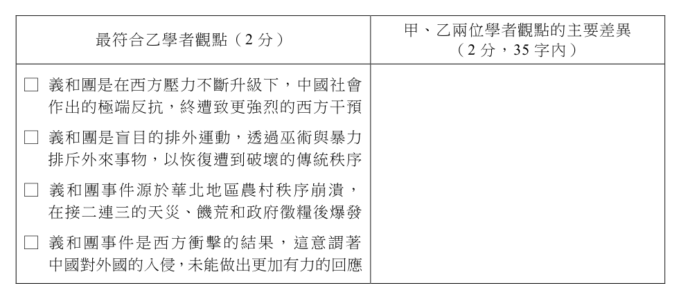
（A） 佛像象徵偶像崇拜，不符合他們認定的伊斯蘭信仰觀點（B） 巴米揚山谷是重要戰略通道，設立大佛像不利戰略布署（C） 阿富汗人民反對聯合國將巴米揚大佛列為世界文化遺產（D） 國外觀光客為了欣賞大佛而進入阿富汗，影響人民生活答案：（A）
詳解與考點 正解：題幹問塔利班摧毀巴米揚大佛的原因，核心是其嚴格詮釋伊斯蘭教義、反對偶像崇拜。A：佛像被視為不符合其信仰觀點的偶像，故成為摧毀對象。
B：戰略通道與佛像存廢不是毀佛動機。
C：阿富汗人民反對世界文化遺產的說法不符史實。
D：觀光客影響生活不是塔利班毀佛的理由。
本題考點：宗教與文化遺產——判讀文物毀損原因時，應回到行動者的宗教意識形態；因果判準——戰略、觀光或遺產身分若無題文依據，不能取代信仰動機。
第 46 題
題文提到「希臘化」，促使該現象得以在中亞地區形成的最關鍵事件為何？請在答題卷勾選一個正確選項，並說明巴米揚與敦煌的佛像都具有希臘化元素的原因為何？（4 分）
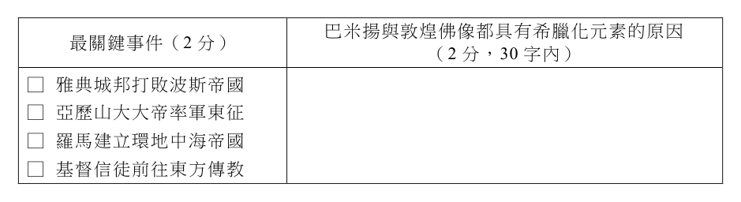
本題選項為上圖中的 A／B／C／D，請對照圖片作答。
標準答案未收錄
詳解與考點 考點：希臘化文化東傳。最關鍵事件選亞歷山大大帝率軍東征。其東征把希臘文化帶入中亞、印度西北，催生融合希臘技法的犍陀羅佛教藝術，再經絲路東傳，巴米揚與敦煌佛像的五官、衣紋遂同具希臘化元素。陷阱：希波戰爭、羅馬、基督東傳皆未把希臘文化帶入中亞。
受到中、美兩國互相提高關稅衍生的貿易戰，與俄羅斯入侵烏克蘭的戰爭影響，許多國家紛紛透過補貼政策扶植本國特定產業。根據統計，2022 年與 2023 年，世界各國實施的貿易限制項目，比 2019 年 COVID-19 疫情前增加了 3 倍。WTO 資料也顯示，2022 至 2023 年全球商品貿易量僅成長 2.8%，相較前期的 9.4%大幅下降。圖 8 為 2022 至 2023 年全球主要區域經濟體的貿易量變化圖。請問：俄羅斯 -18 歐盟 -222 318 26 134 美國 135 中國 -197 日韓 300 92 78 102 124 210 616 墨西哥 201 印度 13 18 81 東協 177 南方共同市場非洲單位：10億美元增加減少圖8
第 47 題
依據題文與圖內容，最適合以下列哪組概念來解釋？ 8
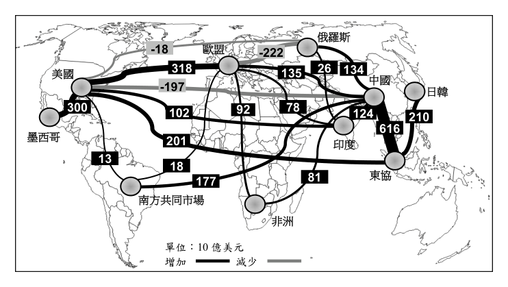
（A） 空間重組與產業變遷（B） 交通革新與時空收斂（C） 地緣政治與全球化挑戰（D） 核心國家發展的擴散現象答案：（C）
詳解與考點 正解：題幹明示中美互加關稅、俄烏戰爭與各國補貼，圖中又呈現美中、俄歐貿易變化，應以政治衝突衝擊跨國貿易理解。C：地緣政治與全球化挑戰可解釋大國對抗與戰爭如何重塑貿易流向、增加限制措施並降低全球商品貿易成長。
A：空間重組與產業變遷可描述部分經濟現象，但沒有扣住題幹的關稅、戰爭與補貼等政治因素。
B：交通革新與時空收斂著重運輸技術降低距離成本，無法解釋貿易戰與戰爭造成的限制。
D：核心國家發展的擴散現象著重發展由核心向周邊擴散，與題幹所示政治衝突下的貿易調整不符。
本題考點：地緣政治——關稅、戰爭與國家補貼會改變國際經貿關係；全球化挑戰——貿易限制增加與跨區貿易量成長放緩，是全球經濟整合受阻的訊號。
第 48 題
題文中的兩個事件對美國都市發展帶來的影響，最可能包括下列何者？
（A） 難民透過陸路抵美，帶來紐約（40°43' N，74°00' W）文化衝突的隱憂（B） 貨物流通頻率降低，影響芝加哥（41°52' N，87°37' W）海港的關稅收入（C） 全球能源價格波動，帶動西雅圖（47°37' N，122°19' W）太陽能電力產業（D） 進口商品價格提升，影響舊金山（37°46' N，122°24' W）半導體零件取得答案：（D）
詳解與考點 正解：題幹指出美中互加關稅與俄烏戰爭引發貿易限制、進口成本與供應不確定性，關鍵是這些衝擊如何影響美國都市的產業需求。D：進口商品價格提高，會增加舊金山相關產業取得進口半導體零件的成本與供應風險，最符合題意，故 D 為正解。
A：題幹主軸是貿易戰與戰爭造成的貿易衝擊，無法推論難民會經陸路抵達紐約，A 錯誤。
B：芝加哥位於內陸，不是海港；且題幹未支持其海港關稅收入受影響，B 錯誤。
C：能源價格波動不必然帶動西雅圖太陽能電力產業，題幹亦未提供此因果關係，C 錯誤。它看起來對，是因為能源價格上升可能提高替代能源的關注，但這不足以推出特定都市的太陽能產業必然受到帶動。
本題考點：貿易限制的產業衝擊——關稅提高與供應鏈受阻會增加仰賴進口零組件產業的成本與取得風險；都市產業判讀——須將都市產業與題幹提供的衝擊直接連結，不可把舊金山市直接等同於其南方的矽谷。
第 49 題
僅依據圖 8 的資料，烏俄戰爭期間俄羅斯在區域互賴上的變化，最可能呈現出什麼特點？請在答題卷作答區作答。（3 分，35 字內）烏俄戰爭期間俄羅斯在區域互賴上的變化特點（3 分，35 字內）
本題選項為上圖中的 A／B／C／D，請對照圖片作答。
標準答案未收錄
詳解與考點 考點：圖8區域互賴變化。據圖，俄羅斯對歐盟貿易大減(-222)，對中國等亞洲國家則增加（如134、26）。特點：俄與歐洲互賴明顯減弱，轉而提升對中國等亞洲國家的依賴。陷阱：須只據圖判讀方向與增減，勿加入圖外的制裁或能源細節。
從文化政策角度來看，我國曾存在國家以公權力抑制特定文化之現象。例如，1970 年代，以本土語言播出的布袋戲電視節目轟動一時，卻遭禁播。禁播原因之一為政府宣稱節目充斥低俗趣味，且有違國語運動政策。而該劇主題曲也因為歌詞提及女主角「討厭交男子，歡迎女朋友」，帶有同性戀隱喻，且強調女主角喜好江湖風流，不符女性應有氣質，遭到禁播。針對前述現象，有學者提出，當時無論在公開場合、文學或表演藝術的領域，已出現本土語文的更普遍使用。例如在選舉期間，有候選人幾乎全程採用本土語言進行街頭演講，同時也有鄉土文學作家書寫草根人物的本土語言習慣。請問：
第 50 題
依據題文，下列何者最能說明當時社會之性別文化？
（A） 當時流行文化已開始出現物化女性現象（B） 異性戀文化受挑戰而無法佔有主流地位（C） 不同性別認同群體的自我實現機會不同（D） 出現以多元性別平等訴求替代兩性平等答案：（C）
詳解與考點 正解：題文女主角因同性戀隱喻與不符合傳統女性氣質而遭禁播，關鍵是性別認同造成的社會壓抑與機會差異。C：不同性別認同群體的自我實現機會不同，最能概括該現象。
A：物化女性不是題文的壓抑機制。
B：異性戀文化仍居主流，並未受挑戰至無法主導。
D：題文沒有說多元性別平等已取代兩性平等。
本題考點：性別文化判讀——由社會接納、媒體呈現與禁制情形分析不同群體的機會；概念判準——遭壓抑不等於物化女性、異性戀失去主流或平權訴求已被取代。
第 51 題
依據題文，我國當時官方政策與語言文化之間的關連性，最適合以下列何項敘述加以詮釋？
（A） 文化政策體現權力不平等，主要存在於媒體再現之中（B） 文化政策雖欲強化特定文化形象，卻仍面對反對力量（C） 文化政策欲提升媒體品質，導致未能欣賞各文化之美（D） 文化政策僅關注精緻文化，忽視通俗文化亦具趣味性答案：（B）
詳解與考點 正解：題文一面指出政府以國語運動與禁播壓制本土語言、同性戀隱喻與非典型女性形象，另一面指出本土語言仍更普遍地用於選舉演講與鄉土文學；關鍵是政策壓制與社會回應的張力。B：文化政策雖欲強化特定文化形象，卻仍面對本土語言使用與創作所呈現的反對力量，最能完整解釋題文，故 B 為正解。
A：題文的權力不平等不只存在於媒體再現，也涉及街頭演講與文學創作，A 把範圍限縮於媒體，錯誤。
C：禁播的核心是國語運動與文化壓制，不是單純為了提升媒體品質或未能欣賞文化之美，C 錯誤。
D：題文重點不是官方只重視精緻文化、忽視通俗文化，而是以公權力壓制特定語言與文化表述，D 錯誤。它看起來對，是因為布袋戲屬通俗文化，但禁播理由與題文後續例證都指向語言文化的權力關係。
本題考點：文化政策與權力——判讀政策效果時，須同時看國家欲強化或壓制的文化形象，以及社會是否以語言、文學或公共行動回應；選項範圍判準——能涵蓋題文中政策與反抗兩面的敘述，才是最適當的詮釋。
第 52 題
依據題文及你的歷史知識，戰後政府有許多管制臺灣社會文化的手段，這些手段與下列哪個法令的施行最有關？請在答題卷勾選一個正確選項，並說明判斷理由。（4 分）
標準答案未收錄
詳解與考點 考點：戒嚴體制的文化管制。法令選臺灣省戒嚴令。理由：1949年戒嚴授權政府廣泛限制言論、出版、廣播並審查媒體，方能禁播布袋戲等管控文化。陷阱：地方自治綱要管選舉、刑法100條治內亂、總動員法屬戰時動員，皆非文化審查依據。
晚清劉銘傳撫臺期間，致力修築鐵路，但因財政困難，乃尋求民間資金合作，完成基隆到新竹的路段。日治以後，總督府因該鐵路的臺北—桃仔園路段有二大不利因素而廢止舊線，另外改建新線，原舊線大部分路段改為公路使用（今臺線公路）。圖是此路段 1 9 內新、舊線鐵路套疊地形暈渲圖，圖 10 為舊線塔寮坑至龜崙嶺路段沿線地區的等高線圖。請問：舊線新線圖9 圖10
第 53 題
晚清臺灣民間資本家願意支持鐵路建設，最可能的原因為何？
（A） 便利漢人移民遷居北部的丘陵地區（B） 提升港口與交通建設便利商品外銷（C） 強化國防建設以避免西方列強入侵（D） 廢除科舉考試後學習西方科技知識答案：（B）
詳解與考點 正解：題幹問的是晚清臺灣「民間資本家」支持鐵路建設的動機，應從可獲利的商業利益判斷。B：鐵路串聯港口與內陸腹地，改善運輸，使商品更便於集散與外銷，資本家可望因此獲利，故 B 為正解。
A：便利移民遷居丘陵地區，未直接說明投資鐵路可帶來何種商業報酬，A 錯誤。
C：強化國防、避免西方列強入侵屬官方可能考量，不是民間資本家出資的主要動機，C 錯誤。它看起來對，是因為鐵路確有軍事運輸功能，但題幹限定的是資本家的支持原因。
D：科舉於 1905 年廢除，晚於基隆—新竹鐵路的興建，且學習西方科技與資本家投資鐵路的獲利動機無關，D 錯誤。
本題考點：晚清臺灣鐵路與商業利益——判讀民間資本投入公共建設時，優先連結運輸改善、商品集散與外銷獲利；動機主體判準——官方國防目的不能直接當作資本家的投資動機。
第 54 題
總督府認為臺北—桃仔園路段的舊線有二大不利因素而改建新線，其中一項是舊線鄰近大嵙崁溪（大漢溪）的路段容易發生水患。僅根據圖 9、圖 10 的資訊判斷，另一項不利因素為何？請在答題卷作答區，寫出一項從圖 9、圖 10 判讀後的圖面資訊。（3 分，10 字內）
本題選項為上圖中的 A／B／C／D，請對照圖片作答。
標準答案未收錄
詳解與考點 考點：地形圖判讀（暈渲＋等高線）。據圖9、圖10，舊線經龜崙嶺，等高線密集、起伏達200~300公尺。答：地勢陡（坡度大），陡坡使火車爬升困難，故總督府改線。陷阱：須讀出等高線密集即陡坡，勿只答「有山」而未點出坡陡。
某高中生探究「多元文化」主題時，看到十九世紀後期一位歐洲作家到亞洲旅行時的紀錄，寫到：「某地」因為發現礦產與橡膠種植，吸引了亞洲各地人士搭乘帆船、汽船或阿拉伯式小船抵達這城市，景象驚人。一位當地船夫表示：「女王很好——我們苦力能賺到錢；而且能把錢存起來。」儘管工作辛苦，但人們不需要倚賴他人，還能保有自己的服飾、習俗與宗教。該生反思後認為，當時統治者只關注治安與稅收，並安排各族群只能從事特定的職業，例如白人是官員，華人從事貿易或採礦，印度人充當警察、傭兵，本地土著則為苦力與農、漁工等。統治者雖然讓他們依據各自的傳統或宗教習俗進行自治，但這不合乎當今法治國家對於族群多元的重視方式。當今法治國家政策會更重視各族群處境的不同，給予合理差別待遇以促進各族群的發展。請問：
第 55 題
上述地點最可能位於今日的哪一城市？
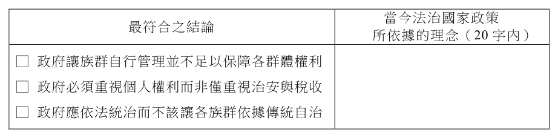
（A） 印尼的雅加達（B） 馬來西亞的檳城（C） 越南的胡志明市（D） 菲律賓的馬尼拉答案：（B）
詳解與考點 正解：題幹的「女王」、錫礦與橡膠、華人採礦貿易、印度人任警察，以及殖民者依族群分配職業，都是英屬馬來亞多元社會的關鍵線索。B：檳城是英屬馬來亞的重要港口與貿易城市，符合錫礦、橡膠經濟吸引多族群移入的情境，故 B 為正解。
A：雅加達當時屬荷蘭殖民統治，統治者不是題幹所稱的「女王」，殖民背景不符。
C：胡志明市當時屬法國殖民統治，與英屬馬來亞的族群分業制度不符。
D：馬尼拉先後受西班牙、美國統治，並非英國女王統治下的馬來亞城市。它看起來對，是因為同為東南亞殖民港市且有多族群人口，但統治國別是判定本題的關鍵。
本題考點：東南亞殖民統治辨識——同時出現英國女王、錫礦橡膠與華人採礦、印度人警察等線索時，判為英屬馬來亞；殖民城市定位須以統治國別與主要經濟活動交叉驗證。
第 56 題
依據題文，該高中生反思後作成什麼結論，最符合其探究的角度？請在答題卷作答區表格內左欄勾選一項最符合之結論，並在右欄依據題文填寫當今法治國家政策所依據的理念。（3 分，左欄勾選正確，右欄始計分）
本題選項為上圖中的 A／B／C／D，請對照圖片作答。
標準答案未收錄
詳解與考點 考點：多元文化與差別待遇理念。殖民者僅放任族群依傳統自治、按族群分派職業，未保障群體權利，最符結論為「讓族群自行管理並不足以保障各群體權利」。依據理念：實質平等（合理差別待遇）。陷阱：另兩結論偏重個人權利或反對自治，未扣住族群保障。
歷史上中國水災頻仍，其中以黃河水患為最。黃河多水患的原因，有源自自然因素，如流域乾濕季節分明、河水含沙量大等，然而其所攜帶的泥沙量，具有造陸功能；此外，也有源自人為因素，例如，某一時期，兩國交戰，位於中原的政權曾多次決堤以阻北方遊牧民族南下，終導致黃河改道，奪淮河河道入海。戰爭結果使中原政權被迫遷都，兩國改以淮河流域為界。而戰爭加上河患，也使位居淮河流域地區的住民大規模徙出。學者 A 將史料記載數百年間的河道、出海口、水患與治河措施地點，選擇適當的投影方式分別按時期標示於底圖上，繪製成圖 11。然而學者 B 檢視這些地圖，發現各時期的黃河河道套疊在底圖時，無法從底圖看到分別對應的出海口，因此認為學者在底圖選用上發生失誤。請問： A 甲乙水患地點水患地點治河措施治河措施 0 200 km 0 200 km 丙丁水患地點水患地點治河措施治河措施 200 km 200 km 0 0 圖11
第 57 題
文中兩國交戰的場景，最符合圖 11 中甲、乙、丙、丁何者？交戰雙方為何？
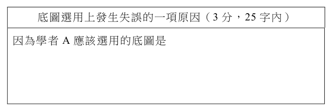
（A） 甲；西晉與匈奴（B） 乙；北宋與金國（C） 丙；南宋與蒙古（D） 丁；南明與滿清答案：（B）
詳解與考點 正解：題幹的關鍵為「決堤阻遊牧、河奪淮入海、被迫遷都、以淮為界」，應以黃河改道與宋金戰爭的歷史事件定位。B：1128年北宋杜充決河阻金，黃河奪淮入海；北宋被迫南遷後，宋金對峙並以淮河一帶為界，圖11乙的河道轉向東南、奪淮由南出海最相符，故B正確。
A：西晉與匈奴的戰事不對應1128年決河奪淮入海及宋金以淮為界的線索，錯誤。
C：南宋與蒙古交戰時的情勢不符合題幹所指北宋決河、被迫遷都的事件，錯誤。
D：南明與滿清不以題幹所述黃河奪淮、北宋南遷的事件為背景，錯誤。
本題考點：歷史地理判讀——以河道改變、交戰對象與遷都等多項線索定位事件；黃河奪淮——1128年宋金戰爭中的決河事件使黃河轉向東南，經淮河入海。
第 58 題
題文提及因戰爭加上河患曾迫使人群大規模遷出。若想進一步探索遷出人群的移入地區及其影響，以下哪種史料最相關？
（A） 地方官修補河堤的紀念碑文（B） 官府在淮河流域徵稅的冊籍（C） 史書中南方的戶口統計資料（D） 畫有黃河水系的地方志地圖答案：（C）
詳解與考點 正解：研究問題是「遷出人群的移入地區及其影響」，最需要能顯示移入地人口變化的資料。C：史書中南方的戶口統計可比較南方人口增減，進而探查遷出者可能移入何處及其影響。
A：地方官修補河堤的紀念碑文聚焦治河行動，難以呈現移入地人口變化。
B：淮河流域徵稅冊籍主要反映遷出地或當地財政，不能直接追查人群移入何處。
D：黃河水系地方志地圖呈現河道與水患，不能提供移入地居民變動的直接證據。
本題考點：史料與研究問題對應——先界定研究的空間是移入地還是遷出地，再選擇能直接觀察該對象的史料；人口統計——戶口資料可用於分析人口移動後的聚集與變化。
第 59 題
某生嘗試以圖 11 資料估算，某一次黃河水患對農產品市場供給線左移的幅度，但發現資料有些不足。若能提供下列哪項資料，最能改善該生估算數值的精確度？
（A） 水患區域範圍大小（B） 水患淹水深度高低（C） 水患好發季節規律（D） 水患持續時間長短答案：（A）
詳解與考點 正解：估算水患使農產品供給線左移的幅度，核心是估算有多少農業生產能力受損。水患區域範圍越大，可能受災的農地與產量越多，供給左移的幅度越能量化，因此 A 最能提高估算精確度。
B：淹水深度會影響作物受損程度，但若不知道受災面積，仍難估算整體市場減產量。
C：好發季節可協助了解災害規律，卻不能直接量出某次水患影響的農地與供給量。
D：持續時間會影響損害，但同樣缺少受災範圍時，難以推得整體供給左移幅度。
本題考點：供給線左移——生產能力或可供應數量下降時，供給線向左移；估算市場衝擊時，優先取得能直接量化受災農地與減產規模的資料。
第 60 題
根據題文，學者 A 在底圖選用上發生失誤的最可能原因為何？請在答題卷作答區作答。（3 分，25 字內）底圖選用上發生失誤的一項原因（3 分，25 字內）因為學者 A 應該選用的底圖是
本題選項為上圖中的 A／B／C／D，請對照圖片作答。
標準答案未收錄
詳解與考點 考點：底圖與年代不符。學者A誤用現代海岸線底圖，但黃河長年挾沙造陸，各時期出海口位置不同，舊河道出海口落在現代底圖海域之外而看不見。參考作答：底圖海岸線採現代，與各時期出海口不符。
中國古代發生瘟疫時，官方與民間會採取各種措施作為因應。例如：地方官員設置「癘所」隔離與施藥治療，民間也會舉行各種儀式來祈求「除瘟解厄」。疫癘影響層面很多，除大量人民死亡外，許多人也會逃離疫區，另謀生路。當勞動力不足，生產力下降，國家賦稅自然減少。政府也可能改變稅制，彌補短缺。現代我國法律對法定傳染病的散播行為訂有刑罰。有法律學者指出，個人行為是否導致疾病散播，須考慮具體情形，如果僅依行為一律都施加刑罰，則有濫用刑罰來維護社會安全感之嫌。請問：
第 61 題
下列宗教性的儀式活動，何者最能彰顯題文中「除瘟解厄」的用意？
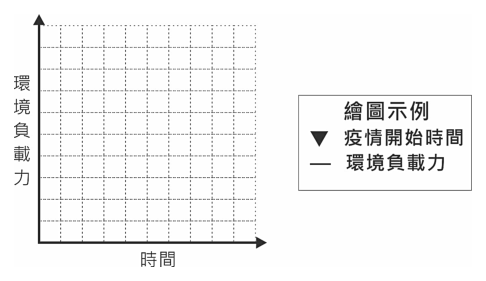
（A） 基隆依張、廖、簡等姓氏排序一直到許姓，由各姓輪值主辦中元普渡祭（B） 新竹新埔褒忠義民廟，由桃竹地區的十五個聯庄，輪流主辦聯合義民祭（C） 雲林馬鳴山的鎮安宮王爺廟，元宵節舉辦「五股十四庄」境內遶境祈安（D） 屏東萬金天主教聖母聖殿，堂慶時由信徒舉辦聖母遶境的大型慶祝活動答案：（C）
詳解與考點 正解：題幹的關鍵是「除瘟解厄」，要找以驅除瘟疫、祈求境內平安為目的的宗教儀式。C 的雲林馬鳴山鎮安宮王爺廟於元宵節舉辦「五股十四庄」境內遶境祈安，屬王爺信仰的驅瘟遶境活動，最能彰顯除瘟解厄的用意，故 C 為正解。
A：基隆中元普渡主要祭祀好兄弟，重點在普施與安撫孤魂，非以驅除瘟疫為核心，A 錯誤。
B：新埔褒忠義民廟的聯合義民祭是紀念義民英靈，儀式目的不是除瘟解厄，B 錯誤。
D：萬金天主教聖母聖殿的聖母遶境是堂慶的大型慶祝活動，未以驅瘟祈安為其主要意旨，D 錯誤。它看起來對，是因為同樣有遶境形式，但遶境是否對應「除瘟解厄」須看祭祀對象與儀式目的。
本題考點：民間信仰儀式功能——以王爺信仰的遶境祈安辨識驅瘟、除厄的目的；情境判讀——比較宗教活動時，依祭祀對象與儀式意旨判斷，不只看是否有遶境。
第 62 題
依據題文，該法律學者對刑罰的觀點，與下列哪一主張最為接近？
（A） 應以矯治手段減少再犯，毋須提高刑罰（B） 為預防犯罪，應加重刑罰加以嚇阻犯罪（C） 刑罰構成人權重大限制，應有充分理由（D） 殺人者應處死刑，使其罪責與刑罰相當答案：（C）
詳解與考點 正解：學者認為個人行為是否導致疾病散播「須考慮具體情形」，若僅依行為一律施加刑罰，可能是濫用刑罰。這觸發刑罰權應受限制、須有充分正當化理由的觀點。C：刑罰會重大限制人身自由等基本權利，因此必須有充分理由並審酌具體情形，最接近學者主張，故 C 為正解。
A：以矯治手段減少再犯是矯治或特別預防取向，題幹並未討論再犯風險或是否提高刑罰，A 錯誤。
B：為嚇阻犯罪而加重刑罰主張擴張刑罰作用，與學者反對不分具體情形一律施罰的立場相反，B 錯誤。
D：殺人者應處死刑強調罪責與刑罰相當的應報取向；它看起來對，是因為選項也談刑罰理由，但題幹重點是避免濫用刑罰並要求個案審酌，不是主張特定罪名應處何種刑罰，D 錯誤。
本題考點：刑罰權與基本權限制——刑罰是對人權的重大干預，適用時須有充分理由並依具體情形判斷；選項收斂判準——題幹若批評一律施罰，應選限制國家刑罰權的主張，而非加重嚇阻、矯治或特定應報刑。
第 63 題
生態平衡是一種動態平衡，若在自然環境、生產內容、生產技術不變的情況下，以題文中提到疫癘對古代社會的影響為案例，在答題卷作答區繪製出「此疫情開始」前後，該地環境負載力的可能變化示意圖。（3 分）
本題選項為上圖中的 A／B／C／D，請對照圖片作答。
標準答案未收錄
詳解與考點 考點：環境負載力是動態平衡。題目限定自然環境、生產內容、技術皆不變，故負載力不隨疫情改變，示意圖畫成大致水平線；改變的是實際人口降到負載力以下再回升。陷阱：誤把人口下降畫成負載力下降。
2025年以色列宣布打擊伊朗多個軍事目標與基礎設施，稱本次行動代號為「崛起之獅」，伊朗也考慮封鎖荷莫茲海峽作為報復。若伊朗真的進行封鎖，某學者想要比較兩國分別的行動，對國際原油價格的影響。研究資料發現中東主要國家原油出口大部分要經過荷莫茲海峽，且找到一份這些國家每天原油生產量的資料（圖 12）。請問：（百萬桶／天） 10 百萬 9 桶 8 原 7 油 6 生 5 產 4 量 3 2 1 0 沙沙烏烏地地伊伊拉拉克克伊伊朗朗阿阿拉聯伯科科威威特特阿拉伯聯合大公國圖 12
第 64 題
伊朗若封鎖題文中的海峽，最可能會嚴重影響哪個海域的石油出口船運？
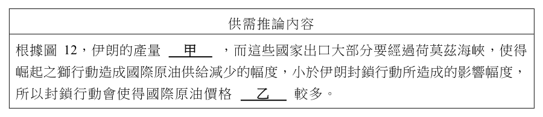
（A） 紅海往波斯灣（B） 紅海往阿拉伯海（C） 阿拉伯海往孟加拉灣（D） 波斯灣往阿拉伯海答案：（D）
詳解與考點 正解：題幹關鍵是荷莫茲海峽為波斯灣產油國原油外運的海上出口，須辨認它連接波斯灣與阿曼灣、再通往阿拉伯海。D：若伊朗封鎖荷莫茲海峽，波斯灣往阿拉伯海的石油出口船運將直接受阻，故 D 為正解。
A：紅海往波斯灣的航線不必通過荷莫茲海峽，A 錯誤。
B：紅海往阿拉伯海的航線主要關聯曼德海峽等水域，不是荷莫茲海峽，B 錯誤。
C：阿拉伯海往孟加拉灣的航線位於荷莫茲海峽以東，不是該海峽的直接出口航線，C 錯誤。
本題考點：世界重要海峽——荷莫茲海峽連接波斯灣與阿曼灣，是波斯灣石油外運的重要通道；地圖定位——先辨認海峽兩側海域，再判斷受封鎖直接影響的船運方向。
第 65 題
根據題文資訊，若該學者以供需架構比較兩國行動對國際原油價格的影響，最可能的結論是什麼？其完整的供需推論內容如表 3，但仍留有甲、乙二項空格區。請在答題卷甲空格區填入適當文字，再於乙空格區勾選正確選項，以完成整個論述。（3 分）表3 供需推論內容根據圖 12，伊朗的產量甲，而這些國家出口大部分要經過荷莫茲海峽，使得崛起之獅行動造成國際原油供給減少的幅度，小於伊朗封鎖行動所造成的影響幅度，所以封鎖行動會使得國際原油價格乙較多。
本題選項為上圖中的 A／B／C／D，請對照圖片作答。
標準答案未收錄
詳解與考點 考點：供需架構比較供給衝擊。甲：由圖12伊朗每日產量約3百多萬桶、在五國中偏少。乙：上漲。因伊朗自身產量不大，但封鎖會卡住所有產油國出口，供給減少幅度大於只打擊伊朗的崛起之獅，故油價上漲較多。
其他年度
回到學科能力測驗社會的年度總覽 ，
或到學科能力測驗題庫首頁 看其他科目。
題目與標準答案出自大考中心 學測歷年試題（依著作權法 §9，考試試題不受著作權保護）。依中華民國《著作權法》第 9 條第 1 項第 5 款，
依法令舉行之各類考試試題不得為著作權之標的，得自由利用。詳解為 AI 整理的學習輔助，
並非官方標準答案 ；中華民國會修訂，引用前請對照現行版本查證。